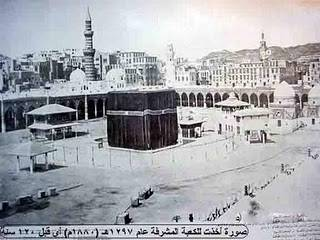
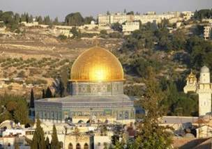
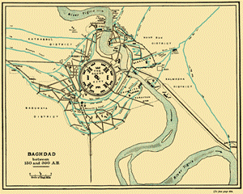

Văn minh là sự kết hợp của đất đai và linh hồn: tài nguyên của đất đai được thị dục và kĩ thuật của con người biến đổi. Sau cái bề mặt và dưới cái thượng tầng kiến trúc, tức triều đình, cung điện, giáo đường, trường học, văn chương, xa xỉ phẩm và nghệ thuật, ta thấy cái cơ sở là con người: người thợ săn bắt con mồi ở trong rừng đem về; nhiều tiều phu đốn rừng; người chăn gia súc; nông dân vỡ đất, gieo, gặt, săn sóc cây trái, nuôi ong, nuôi gà vịt; người nội trợ lo lắng trăm công ngàn việc trong nhà; người thợ mỏ đào đất; người xây cất nhà cửa, đóng xe, đóng tàu; người thợ thủ công làm các đồ vật và đồ dùng; người bán rong, người chủ tiệm và người tiêu thụ; người góp cổ phần dùng số tiền tiết kiệm của mình để đầu tư phát triển kĩ nghệ; người thầu khoán dùng nhân lực và vật liệu và trí tuệ để tạo ra dịch vụ và của cải. Tất cả những người đó họp lại thành con quái vật khổng lồ khiên nhẫn và hiếu động, chở nền văn minh (của nhân loại) trên cái mông lúc lắc bất ổn của nó.
Trong đế quốc Hồi giáo, những hạng người đó rất hoạt động. Họ nuôi gia súc, ngựa, lạc đà, dê, voi, chó; họ lấy mật ong, vắt sữa lạc đà, sữa dê, sữa bò, và trồng hàng trăm giống lúa, rau, cây ăn trái, hạt dẻ và hoa. Cây cam được đem từ Ấn Độ qua Ả Rập, trước thế kỉ thứ X một chút, rồi từ Ả Rập qua Syrie, Tiểu Á, Palestine, Ai Cập, Y Pha Nho, sau cùng nó lan tràn Nam Âu. Sự trồng mía và làm đường cũng được người Ả Rập học được của người Ấn rồi truyền bá trong miền Cận Đông, rồi bọn Thập tự quân đưa vào châu Âu. Bông vải được người Ả Rập trồng đầu tiên ở châu Âu. Đất đai Ả Rập cực khô cằn mà họ thành công được như vậy là nhờ một hệ thống dẫn thuỷ nhập điền khéo tổ chức, trong khu vực kinh tế đó, các calife đã không theo lệ thường của họ là để cho dân chúng tự do kinh doanh; chính quyền điều khiển và bỏ tiền ra để sửa sang các con kinh lớn. Sông Euphrate được đào, vét ở Mésopotamie, sông Tigre ở Ba Tư; và ở Bagdad người ta đào một con kinh lớn nối hai con sông đôi đó[71]. Các calife đầu tiên dòng Abdasside khuyến khích việc đào kinh tháo nước các đầm lầy, dựng lại các làng bị suy sụp và các trại ruộng bỏ hoang. Thế kỉ thứ VI, dưới triều đại Samanide, miền nằm giữa Boukhara và Samarcande được coi là một trong “bốn miền cực lạc ở hạ giới” – ba miền kia là Nam Tư, Irak và miền chung quanh Damas.
Từ các mỏ và hầm đá, người ta đào được vàng, bạc, sắt, chì, thuỷ ngân, an-ti-mon (antimoine), diêm sinh, thạch miên (amian), cẩm thạch và ngọc thạch. Người ta lặn mò trân châu ở vịnh Ba Tư. Người ta bắt đầu dùng thạch du (naphte) và thạch não du (bitume); một đoạn trong thư tịch của Haroun cho biết giá “thạch du và cây sậy” dùng để hoả thiêu xác Jafar. Kĩ nghệ còn ở giai đoạn tiểu công nghệ làm việc tại nhà hoặc trong những tiệm nhỏ và tổ chức thành phường. Có ít cơ sở chế tạo, kĩ thuật không tiến bộ mấy, trừ sự phát triển các máy xay chạy bằng sức gió.
Masoudi ở thế kỉ thứ X bảo rằng người ta thấy những máy xay ở Ba Tư và Cận Đông; ở châu Âu, trước thế kỉ XII, không có thứ máy ấy, có lẽ cũng do Hồi giáo tặng kẻ thù của họ là Thập tự quân nữa. Thợ thủ công rất tài khéo về máy móc. Chiếc đồng hồ nước vua Haroun al-Rashid gửi tặng vua Charlemagne (Pháp) làm bằng da và đồng khảm kim tuyến, cứ mỗi giờ lại có những kị binh bằng kim khí mở cửa ra, để rớt xuống một cái chũm choẹ một số viên đạn nhiều ít tuỳ lúc đó là mấy giờ, rồi lại quay trở vào, khép cửa lại. Sức sản xuất chậm, nhưng người thợ làm trọn công việc từ đầu tới cuối, để hết cả sáng kiến, tài năng của mình vào, nên mỗi kĩ nghệ gần thành một nghệ thuật. Những hàng vải Ba Tư, Syrie, Ai Cập nổi tiếng về kĩ thuật công phu và hoàn thiện; thị trấn Mossoul nổi tiếng về thứ vải “mousseline”, Damas nổi tiếng về thứ vải “damassée”[72], Aden nổi tiếng về hàng len. Damas còn nổi tiếng về thứ gươm bằng thép luyện rất kĩ; Sidon và Tyr nổi tiếng về thuỷ tinh đẹp và trong suốt không nơi nào bằng; Bagdad; Rayy[73] về đồ sành, kim, lượt; Rakka về dầu oliu và xà bông; Fars về dầu thơm và các tấm thảm. Dưới chính quyền Hồi giáo, sự thịnh vượng về kĩ nghệ và thượng mại của Tây Á đạt tới mức rất cao, mà Tây Âu trước thế kỉ XVI không sao bằng được.
Sự chuyên chở trên bộ hầu hết là dùng sức lạc đà, ngựa và sức người. Ngựa được quí lắm, nên ít khi dùng để chở nặng. Người Ả Rập bảo: “Bác đừng gọi nó là con ngựa của tôi, nó là thằng út của tôi đấy. Nó chạy nhanh hơn gió, nhanh như chớp… Chân nó nhẹ tới nỗi có thể nhảy nhót trên ngực cô tình nhân của bác mà cô ấy thấy như không”. Vì vậy, con lạc đà, “chiếc tàu trong sa mạc”, phải chở gần hết các hàng hoá Ả Rập, những thương đội gồm bốn ngàn bảy trăm con lạc đà lắc lư nhẹ nhàng, đi khắp bốn phương trong đế quốc Hồi giáo. Có những con đường lớn xuất phát từ Bagdad, túa ra mọi phía, qua Rayy, Nishapur, Mevr, Boukhara và Samarcande, tới Kashgar và biên giới Trung Hoa; qua Bassora tới Chiraz; qua Kufa tới Médine, La Mecque và Aden; qua Mossoul hoặc Damas để tới bờ biển Syrie. Có những quán trọ, viện cứu tế và phông ten nước để khách qua đường và súc vật nghỉ chân, giải khát. Cũng có sông và kinh tiện lợi cho sự buôn bán trong xứ. Haroun al-Rashid tính đào một con kinh Suez nhưng Yahya ngăn cản, không hiểu vì lí do gì, có lẽ vì tài chính thiếu hụt. Có ba cây cầu nổi bằng thuyền để qua sông Tigre ở Bagdad, rộng hai trăm rưỡi thước.
Thương mại ở trên đường bộ và đường thuỷ thật tấp nập. Một miền xưa chia làm bốn quốc gia, nay thống nhất, sự kiện đó có lợi về kinh tế cho Tây Á; không còn thuế quan và các hàng rào khác nữa, mà sự thống nhất ngôn ngữ cùng tôn giáo cũng làm cho hàng hoá dễ tiêu thụ. Người Ả Rập không khinh thương nhân như giới quí tộc châu Âu; họ nhập bọn ngay với người Kitô giáo, Do Thái giáo và Ba Tư để chở hàng hoá từ người sản suất tới người tiêu thụ, mà hưởng phần lợi lớn nhất. Các thị trấn tăng lên, mở rộng ra, ồn ào tiếng chở hàng và tiếng buôn bán; những người bán hàng rong tới dưới cửa sổ mắt cáo của từng nhà để rao hàng; chủ tiệm đưa món hàng ra phất phất, lúc lắc để chào khách, tiếng trả giá ồn ào; các chợ và chợ phiên náo nhiệt kẻ mua người bán, và cả thi sĩ nữa; các thương đội từ Trung Hoa, Ấn Độ tới Ba Tư và Ai Cập; tại các cảng như Bagdad, Bassora, Aden, Le Caire và Alexandrie, có những tàu buôn vượt biển. Thương thuyền Ả Rập làm chúa tể trên Địa Trung Hải cho tới thời Thập tự quân, từ đầu này là Syrie và Ai Cập, qua đầu kia là Tunisie, Sicile, Maroc và Y Pha Nho, ghé vào Hy Lạp, Ý và Gaule; nó đánh bạt Ethiopie ra khỏi Hồng Hải; do biển Caspienne, thương nhân Ả Rập tới Mông Cổ, và do sông Volga họ từ Astrakhan tới Novgorod, qua Finlance, Scandinavie rồi tới Đức, tại đây họ để lại hàng ngàn đồng tiền Ả Rập; thuyền Trung Hoa ghé thăm Bassora; họ cũng phái những thuyền buồm từ vịnh Ba Tư qua Ấn Độ, Tích Lan, len lỏi qua các eo biển ở Đông Nam Á rồi theo bờ biển Trung Hoa mà tới Khanfu (Quảng Châu); ngay từ thế kỉ thứ VIII, một đoàn thương nhân Hồi giáo và Do Thái giáo đã lập cơ sở vững vàng ở đó. Sự hoạt động thương mại đó cực thịnh ở thế kỉ thứ X trong khi Tây Âu cực suy; và khi nó suy thì nó còn lưu lại vết tích trong nhiều ngôn ngữ châu Âu, như trong những tiếng tariff (giá biểu)[74], magazine (cửa hàng, kho hàng), caravane (thương đội), bazar (hàng tạp hoá).
Chính phủ để cho kĩ nghệ và thương mại được tự do, và một tiền tệ tương đối vững giúp cho hai ngành ấy phát triển. Các vị calife đầu tiên dùng đồng tiền của Byzance hoặc của Ba Tư, nhưng năm 695, Abd al-Malik cho đúc tiền Ả Rập, gồm đồng dinar bằng vàng và đồng dirhem bằng bạc[75]. Ibn Hawkal (khoảng 975) tả một thứ hối phiếu bốn mươi hai ngàn dinar gởi cho một thương gia ở Maroc, hình thức tín dụng đó tiếng Ả Rập gọi là sakk và sakk là nguồn gốc tiếng chèque (chi phiếu) của Pháp. Các nhà tư bản cấp vốn cho các cuộc đi xa buôn bán và các thương đội; và mặc dầu lệ cấm sự cho vay lấy lời, người ta vẫn tìm được cách, như ở châu Âu, tránh luật lệ mà trả vốn lẫn một số bù vào công lao và sự mạo hiểm của chủ nợ. Sự độc quyền tuy trái phép nhưng vẫn thịnh vượng. Omar mất chưa đầy một thế kỉ mà giới thượng lưu Ả Rập đã kiếm được gia sản lớn, sống trong những dinh thự lộng lẫy, có cả trăm nô lệ hầu hạ. Yahya dòng Barméside chịu trả bảy triệu dirhem (560.000 Mĩ kim) một hộp bằng bảo thạch để đựng ngọc trai, mà người chủ cũng không chịu bán; vị calife Muktafi, theo sử chép, khi chết, để lại hai chục triệu dinar (94.500.000 Mĩ kim) đồ trang sức và hương phẩm.
Khi Haroun al-Rashid làm lễ thành hôn cho con trai là al-Mamoun thì bà nội của cô dâu Buran trút lên đầu chàng rể một đám mưa trân châu; còn cha của chú rể phân phát cho đám tân khách những cục xạ hương, trong mỗi cục có một miếng giấy tặng mỗi vị khách một tên nô lệ, một con ngựa, một khu đất hoặc một món nào khác. Sau khi bị Muktadir tịch thu mười sáu triệu dinar, nhà buôn châu báu Ibn al-Jassas vẫn còn là một phú gia. Nhiều thương nhân hải ngoại có gia sản đáng giá bốn triệu dinar; mấy trăm thương gia có những biệt thự đáng giá từ mười ngàn tới ba chục ngàn dinar (142.500 Mĩ kim).
Ở dưới chân cơ cấu kinh tế là bọn nô lệ. Tỉ số đám nô lệ này ở đế quốc Hồi giáo chắc cao hơn ở các nước Kitô giáo, vì tại các nước này, chế độ nông nô đương thay chế độ nô lệ. Tương truyền Muktadir có tới mười một ngàn hoạn quan trong cung điện; Musa bắt ba trăm ngàn tù binh ở châu Phi, ba chục ngàn “trinh nữ” ở Y Pha Nho đem về bán làm nô lệ; Kutayba bắt trăm ngàn nô lệ ở Sogdiane; những con số đó phải giảm đi, vì người phương Đông hay nói quá. Kinh Coran cho phép trong chiến tranh được bắt những người không theo Hồi giáo làm nô lệ; và dùng làm nô lệ những đứa trẻ cha mẹ là nô lệ; chỉ có hai trường hợp đó là hợp pháp; không một tín đồ Hồi giáo nào (cũng như không một tín đồ Kitô giáo trong các nước thờ Chúa Kitô) có thể bị bắt làm nô lệ được. Tuy nhiên sự buôn bán nô lệ, cũng phát triển lắm vì số nô lệ bắt trong các cuộc viễn chinh rất đông; mọi da đen ở Đông Phi và Trung Phi, Thổ Nhĩ Kỳ hoặc Trung Hoa ở Turkestan, người da trắng Nga, Ý, Y Pha Nho. Người Hồi giáo có quyền sinh sát đối với nô lệ của mình, nhưng thường người ta nhân từ, khoan hồng với họ, và đời sống của họ không đến nỗi tệ hơn – có phần còn sướng hơn, vì được bảo đảm hơn – đời sống một người thợ trong nhà máy ở châu Âu thế kỉ XIX.
Bọn nô lệ làm đa số các công việc phụ trong các thị trấn; họ làm tôi tớ trong nhà hoặc làm cung phi, hoạn quan trong hậu cung. Hầu hết các kép hát, kép múa đều là nô lệ. Ông chủ ăn nằm với một nữ nô lệ (nô tì) hoặc bà chủ ăn nằm với một nam nô lệ thì đứa con sinh ra được tự do. Bọn nô lệ có quyền cưới hỏi và con của họ nếu thông minh, thì có thể được ăn học. Một điều đáng ngạc nhiên là vô số các con trai của hạng nô lệ có được địa vị cao trong giới trí thức và chính trị ở đế quốc Hồi giáo, và rất nhiều người lên ngôi vua, như Mahmud và các vua Mameluk đầu tiên.
Sự bóc lột kẻ nghèo ở các xứ Hồi giáo Á châu không khi nào tàn nhẫn như ở Ai Cập thời tà giáo, Kitô giáo hay Hồi giáo mà nông dân làm quần quật suốt ngày chỉ để có được một cái chòi, một tấm khăn quấn mình, và khỏi chết đói. Đế quốc Hồi giáo có nhiều hành khất, trong bọn đó có nhiều kẻ gian trá; những người Á nghèo có một cách tự bảo vệ là khéo làm rề rà cho lâu xong; họ có vô số cách thức lười biếng, ít ai bằng; nhiều người hảo tâm bố thí cho họ, và cùng lắm thì một kẻ vô gia cư có thể vô tá túc trong lâu đài đẹp nhất của thị trấn – tức thánh thất. Vậy mà sự đấu tranh giai cấp vẫn âm ỉ bất tuyệt năm này qua năm khác và lâu lâu (các năm 778, 796, 808, 838) lại bùng nổ một cách dữ dội. Vì thường thường, Quốc gia và tôn giáo chỉ là một, cho nên các cuộc nổi loạn có hình thức tôn giáo. Vài giáo phái như phái Khuramiyite, phái Muhayite, theo tư tưởng cộng sản của tên phiến loạn Ba Tư Mazdaz; một nhóm người mang tên là Surkh Alam – “Cờ đỏ”. Khoảng 772, Hashim al-Mukanna – đấng “Tiên tri che mặt” ở Khorasan[76] – tuyên bố rằng mình là Thượng Đế giáng sinh để tái lập chế độ cộng sản của Mazdak. Ông ta tập hợp được nhiều giáo phái, chiến đấu trong nhiều năm, thống trị miền Bắc Ba Tư trong mười bốn năm và sau cùng bị bắt rồi bị giết (786). Năm 838, Babik al-Khuranni diễn lại tuồng đó, mộ được một đám phiến loạn gọi là Muhammira – bọn “Đỏ” – chiếm Azerbaidjan, giữ được hai mươi hai năm, liên tiếp đánh bại mấy đạo quân Quốc gia, và (theo lời Tabari) giết hai trăm năm mươi lăm ngàn năm trăm quân lính và tù binh rồi mới chịu thua. Vua Mutasim ra lệnh cho chính tên đao phủ của Babik chặt tay chân của hắn ra từng khúc, còn thân mình thì xóc xiên ở trước hoàng cung, đầu lâu đem bêu ở khắp thị trấn miền Khorosan để cho dân chúng nhớ rằng con người không phải sinh ra tự do và bình đẳng đâu.
Trong số những “chiến tranh nô lệ” ở phương Đông, cuộc chiến nổi danh nhất do Ali tổ chức. Ông ta là một người Ả Rập, tự xưng là hậu duệ của người con rể của đấng Tiên tri Mahomet. Ở gần Bassora có nhiều nô lệ da đen đào mỏ hoả tiêu (salpêtre). Ali vạch cho họ thấy thân phận bị đày đoạ của họ ra sao, thúc họ theo ông mà nổi loạn, sẽ được tự do, giàu có và… có cả nô lệ để sai khiến nữa. Họ nghe lời, chiếm thực phẩm và các đồ viện trợ, đánh bại những đoàn quân của chính quyền phái lại, rồi tự xây cất những làng độc lập, có đủ dinh thự cho các thủ lĩnh, đủ khám đường để nhốt tù binh, và thánh thất để hành lễ (869). Chủ mỏ hoả tiêu dụ Ali nếu thuyết phục được bọn phiến loạn trở về làm việc thì cứ mỗi tên, chủ sẽ tặng ông ta năm dinar (23, 75 Mĩ kim), ông từ chối. Các làng chung quanh phong toả kinh tế họ, để họ đói mà phải đầu hàng, nhưng khi hết lương thực, họ tấn công Obolla, giải phóng rồi tuyển mộ bọn nô lệ đó, cướp bóc và sau cùng nổi lửa đốt thị trấn (870). Thấy thành công, Ali dẫn bộ hạ chiếm được nhiều thị trấn khác, thống trị cả miền nam Ba Tư và Irak cho tới vòng thành Bagdad. Thương mại đình trệ, dân chúng kinh đô bắt đầu đói.
Năm 871, viên tướng da đen Mohallah cầm đầu một đạo quân phiến loạn mạnh mẽ, chiếm Bossara; theo các sử gia, ba trăm ngàn người bị giết, hàng ngàn đàn bà trẻ con, cả trong giới quí tộc Hashimite, thành tì thiếp hay nô lệ của bọn da đen. Cuộc phiến loạn kéo dài mười năm nữa; nhiều đạo quân lớn tới dẹp mà không được; người ta dụ kẻ nào đào ngũ thì được ân xá và được thưởng; nhiều kẻ bỏ Ali mà về với chính phủ. Số còn lại bị bao vây, tấn công bằng đạn chì nấu chảy, và bằng những bó đuốc tẩm thạch du. Sau cùng một đạo quân của tổng lý đại thần Mowaffak chỉ huy, vào được thành của quân phiến loạn, giết Ali, đem thủ cấp dâng Mowaffak. Ông này cùng với các sĩ quan chỉ huy quì xuống cảm ơn Allah đã phù hộ cho mình (883). Cuộc nổi loạn đó kéo dài bốn bốn mươi năm, làm cho cả cơ cấu kinh tế và chính trị miền Đông đế quốc lâm nguy. Ibn Tulun, viên thống đốc Ai Cập nhân cơ hội đó tách ra khỏi đế quốc, và một trong những thuộc địa giàu có nhất của Hồi giáo thành một quốc gia độc lập.
Thị dục của con người, theo thứ tự, sau thức ăn và đàn bà mới tới sự vĩnh phúc của linh hồn; khi no cơm ấm cật, nhục dục thoả mãn rồi, người ta mới để một chút thì giờ mà nghĩ tới Thượng Đế. Mặc dù theo chế độ đa thê, tín đồ Hồi giáo cũng để rất nhiều thì giờ thờ phụng Allah, và theo lời dạy trong kinh Coran mà dựng nên luân lí, luật pháp và chính quyền.
Theo lí thuyết, không có tín ngưỡng nào giản dị bằng Hồi giáo: “Không có vị thần nào khác ngoài Allah, và Mahomet là vị tiên tri của Ngài” (La ilaha il-Allah, Muhammad-un Rasulu-llah). Ý nghĩa câu đó thật ra không đơn giản vì vế thứ nhì bắt tín đồ phải tuân theo tất cả những lời răn bảo trong kinh Coran. Vì vậy mà tín đồ chính giáo tin có thiên đường và địa ngục, có thiên thần và quỉ sứ, tin sự tái sinh của thể xác và linh hồn, tin rằng mọi biến cố đều do tiền định, tin ngày phán xét cuối cùng, và chấp nhận bổn phận của kẻ hành đạo – cầu nguyện, bố thí, trai giới và hành hương – và tin rằng các nhà Tiên tri ra đời trước Mahomet đều được thiên khải. Kinh Coran có câu: “Mỗi dân tộc có một vị Thiên sứ và một vị Tiên tri” (X, 48); một số tu sĩ đếm được tới hai trăm hai mươi bốn ngàn thiên sứ, nhưng Mahomet cho rằng chỉ có Abraham, Moïse và Kitô là diễn được lời của Thượng Đế. Vậy tín đồ phải nhận rằng Cựu ước và các sách Phúc âm đều được thiên khải; nếu có đoạn nào trái với kinh Coran thì chỉ tại người sau đã vô tình hay cố ý sửa đổi; trong mọi trường hợp, kinh Coran thay thế tất cả những lời thiên khải trước và Mahomet hơn hết thảy các thiên sứ khác của Thượng Đế. Tín đồ Hồi giáo tuy bảo ông là người trần nhưng cũng hết lòng tôn sùng ông như tín đồ Kitô giáo tôn sùng Chúa Kitô. Một tín đồ đặc biệt mộ đạo: “Nếu tôi sống đồng thời với Ngài thì không khi nào tôi để vị Sứ đồ của Thượng Đế đặt bàn chân thánh của Ngài xuống đất, Ngài muốn đi đâu, tôi sẽ công kênh Ngài trên vai tôi đó”.
Tín ngưỡng của hạng mộ đạo còn phức tạp hơn nữa vì ngoài kinh Coran, họ còn theo những truyền thuyết (hadith) về các thói quen (sunna) và các cuộc đàm đạo của Mahomet mà giới trí thức còn giữ được. Lần lần người ta thấy vấn đề nghi lễ, luân lí, pháp luật mà thánh kinh không giải quyết được minh bạch; lời trong kinh đôi khi tối nghĩa, cần phải giải thích; gặp những chỗ đó, cần phải biết Mahomet hoặc các đạo hữu của ông nói hoặc hành động ra sao, và một số tín đồ chuyên sưu tầm các truyền thuyết ấy.
Trong thế kỉ thứ nhất của kỉ nguyên của họ, họ không chịu chép những “ngôn hành lục” đó lại, chỉ mở những trường ở các thị trấn để đọc và giảng cho mọi người nghe; người ta thường thấy những tín đồ Y Pha Nho hay Ba Tư lại để nghe một bài giảng của một tu sĩ tự xưng là đã giữ được chân truyền của Mahomet. Do đó mà ngoài kinh Coran còn những lời răn dạy truyền khẩu nữa, cũng như ngoài kinh Cựu ước còn có Pháp điển Mishana và Gemara. Năm 189, Jehuda ha-Nasi chép lại luật pháp truyền khẩu của người Do Thái; cũng vậy, năm 870, al-Bukhari, sau khi qua khắp các xứ từ Ai Cập tới Turkestan để nghiên cứu với tinh thần phê phán sáu trăm ngàn truyền thuyết Hồi giáo, giữ lại bảy ngàn hai trăm bảy mươi lăm truyền thuyết và ghi chép trong sách Sahih – “Chính thư”. Mỗi khi lựa một truyền thuyết nào thì ông ghi một loạt dài tên các nhân vật đã lưu truyền thuyết ấy, từ thời ông ngược lên tới Mahomet hoặc một đạo hữu của Mahomet. Nhiều truyền thuyết đã làm thay đổi tín ngưỡng.
Chẳng hạn Mahomet không bao giờ nhận có khả năng tạo được phép mầu, nhưng có mấy trăm truyền thuyết thú vị kể những hành động phi thường của ông: chỉ có một số lương thực may lắm là đủ cho một người ăn mà ông nuôi được cả một đám đông; một lần ông cầu nguyện mà trời đổ mưa liền, rồi lại cầu nguyện ngược lại mà mưa tạnh; ông sờ vào vú mấy con dê cái đã cạn sữa và tức thì chúng lại có sữa; có những bệnh nhân chỉ sờ những phần áo hoặc mớ tóc đã cắt của ông mà hết bệnh. Hình như những truyền thuyết ấy chịu ảnh hưởng của Kitô giáo; mặc dù Mahomet nghiêm khắc với kẻ thù, nhưng truyền thuyết lại khuyên tín đồ yêu kẻ thù; bài Cầu nguyện Chúa cóp đúng bài trong Phúc âm; những ngụ ngôn người gieo mạ, khách dự đám cưới, và thợ trong vườn nho được đặt vào miệng Mahomet; xét kĩ thì người ta biến ông thành một tín đồ Kitô giáo rất ngoan đạo, mặc dầu ông có tới chín bà vợ[77]. Nhiều nhà phê bình Hồi giáo phàn nàn rằng nhiều truyền thuyết đã được tạo ra để tuyên truyền cho dòng họ Omeyyade, dòng họ Abdasside hoặc một thị tộc khác; Ibn Abi al-Awja, bị hành hình ở Kufa năm 772, thú nhận đã đặt ra bốn ngàn truyền thuyết. Vài kẻ hoài nghi mỉa mai các tập truyền thuyết và bịa ra những truyện vô lễ, thô tục dưới hình thức truyền thuyết trang nghiêm. Về phương diện tín ngưỡng và luân lí, tín đồ bắt buộc phải theo những truyền thuyết trong những tập đã được công nhận, và sự tuân theo đó thành một dấu hiệu đặc biệt của phe chính giáo, mà người ta gọi là Sunni, tức phe truyền thống.
Một truyền thuyết kể rằng, thiên thần Gabrien hỏi Mahomet:
- Hồi giáo là gì?
Mahomet đáp:
- Hồi giáo là tin Allah và vị Tiên tri của Ngài, đọc những kinh cầu nguyện đã chỉ định, bố thí cho kẻ nghèo, nhịn ăn trong tháng Ramadan và hành hương ở Thánh địa La Mecque.
Cầu nguyện, bố thí, nhịn ăn và hành hương là “Bốn bổn phận” của Hồi giáo. Thêm lòng tin Allah và vị Tiên tri nữa, thành “Năm cái trụ của Hồi giáo”.
Trước khi cầu nguyện phải tẩy uế; vì tín đồ phải cầu nguyện mỗi ngày năm lần, thành thử ai mộ đạo cũng tự nhiên hoá ra sạch sẽ. Mahomet cũng như Moïse, cho tôn giáo là một cách giữ vệ sinh cũng ngang với đạo đức, theo qui tắc phổ cập này là cái gì hợp lí (như vệ sinh) cũng phải là hình thức huyền bí (tôn giáo) thì mới được dân chúng chấp nhận. Ông bảo Allah không nghe lời cầu nguyện của một người dơ dáy; ông còn bắt phải chà răng trước khi cầu nguyện nữa, sau cùng ông nhân nhượng, chỉ bắt rửa mặt, tay chân thôi (V, 6)[78]. Đàn ông mới ăn nằm với đàn bà, đàn bà có kinh hoặc mới sinh con mà chưa tẩy uế thì phải tắm trước khi cầu nguyện. Lúc hừng đông, gần tới chính ngọ, bốn năm giờ chiều, khi mặt trời lặn và lúc đi ngủ, tu sĩ lên tháp (minaret) ở thánh thất để kêu gọi tín đồ cầu nguyện (adhan):
Allahu Akba (Allah vĩ đại nhất)! Allahu Akbar!
Allahu Akbar! Allahu Akbar! Tôi nhận rằng ngoài Allah không có một thần linh nào khác. Tôi nhận rằng ngoài Allah không có một thần linh nào khác. Tôi nhận rằng ngoài Allah không có một thần linh nào khác. Tôi nhận rằng Mahomet là sứ đồ của Allah. Tôi nhận rằng Mahomet là sứ đồ của Allah. (Tín đồ) lại cầu nguyện đi! Lại cầu nguyện đi! Lại cầu nguyện đi! Lại làm công việc tốt đẹp nhất đi! Lại làm công việc tốt đẹp nhất đi! Lại làm công việc tốt đẹp nhất đi! Allahu Akbar! Allahu Akbar! Allahu Akbar! Ngoài Allah không có một thần linh nào khác!
Tiếng gọi đó thật mạnh mẽ, cao cả, nhắc người ta hừng đông thức dậy, giữa lúc nóng nực thì ngừng tay lại nghỉ ngơi; nó là một thông điệp tôn nghiêm của Thượng Đế trong cảnh tịch mịch của ban đêm; cả những người ngoại quốc cũng thích nghe tiếng hát nheo nheo kì dị ấy từ các thánh thất phát ra kêu gọi tâm hồn các tín đồ hãy tạm rời mặt đất mà bay bổng lên cảm thông một lúc với nguồn bí mật của sự sống và của tinh thần. Vào năm lúc đó, tất cả các tín đồ khắp nơi trên đều phải ngừng công việc, bất cứ là việc gì, rửa ráy rồi hướng về La Mecque và điện Kaaba, cùng tuần tự quì xuống, cuối đầu đọc những lời cầu nguyện ngắn như nhau; họ họp thành một đoàn thể vĩ đại di động theo mặt trời khắp nơi trên thế giới[79].
Ai rảnh rang thì có thể lại thánh thất mà cầu nguyện. Bình thường thánh thất mở cửa suốt ngày; tín đồ dù theo chính phái hay tà phái, cũng có thể vào đó tắm rửa, nghỉ ngơi hoặc cầu nguyện. Cũng ở thánh thất, trong bóng mát của chính điện, người ta dạy học, xử án, và các calife tuyên bố chính sách hay sắc lệnh; thiên hạ có thể tới đó để chuyện trò, nghe ngóng tin tức, có khi để thương lượng một công việc làm ăn nữa; thánh thất Hồi giáo cũng như giáo đường Do Thái giáo và Kitô giáo, là trung tâm sinh hoạt hằng ngày, là chỗ cộng đồng. Nửa giờ trước lúc chính ngọ ngày thứ sáu, tu sĩ từ trên tháp cao, hát bài kinh salaam, tức bài chúc phúc lên đấng Allah, Mahomet và gia đình cùng các đạo hữu thân của ông; rồi gọi tín đồ lại thánh thất; tín đồ phải tắm, thay quần áo và xức dầu thơm rồi mới tới; nếu không thì có thể rửa mặt và tay chân ở hồ nước hay phông ten trong sân thánh thất. Thường thường hễ đàn ông tới thì đàn bà ở nhà, hoặc ngược lại vì người ta sợ phụ nữ dù che mặt bằng khăn voan, cũng làm cho đàn ông đãng trí, động tình. Họ để giày ở ngoài sân, (nếu họ đông quá) họ đứng chen vai nhau thành một hay nhiều hàng, quay mặt về cái mihrab (khán thờ xây trong tường), như vậy tức là hướng về La Mecque[80]. Một người iman[81] (điều khiển buổi cầu nguyện) đọc một đoạn trong kinh Coran và một bài thuyết giáo ngắn. Mỗi tín đồ tụng nhiều bài cầu nguyện và theo những tư thế đã qui định: cúi mình, quì xuống, phủ phục trong khi cầu nguyện[82].
Rồi viên iman đọc một loạt kinh kính chào, chúc mừng, kỳ đảo rất rắc rối mà đám đông im lặng lắng nghe. Không có thánh ca, thánh lễ cũng không rước sách; không quyên tiền, không cho thuê ghế trống trong thánh thất; tôn giáo với quốc gia chỉ là một, cho nên quốc khố đài thọ hết. Viên iman không phải là một mục sư, mà chỉ là một người tục vẫn kiếm ăn bằng một nghề ở ngoài đời, mà được viên thủ từ thánh thất trả cho một số tiền công nhỏ để điều khiển tín đồ trong các lúc cầu nguyện, trong một thời gian nhất định nào đó. Hồi giáo không có hàng giáo phẩm. Sau các buổi cầu nguyện ngày thứ sáu, tín đồ được tự do làm việc như các ngày khác, nếu họ muốn; nhưng họ cũng đã được sống một giờ thanh khiết, quên những tranh đấu kinh tế và chính trị, lại bất giác làm cho tình đoàn kết trong cộng đồng được vững hơn nhờ một nghi lễ chung.
Bổn phận thứ nhì của người hành đạo là bố thí. Mahomet mạt sát bọn giàu có cũng kịch liệt gần như Kitô; mới đầu có người nghĩ rằng ông là nhà cải cách bất bình vì sự tương phản giữa sự xa hoa của bọn thương gia quí phái và sự nghèo khổ của quần chúng; các đồ đệ đầu tiên của ông hầu hết đều có vẻ sinh trong gia đình nghèo hèn. Một trong những hành động đầu tiên của ông ở Médine là đánh một thứ thuế hàng năm là hai phân rưỡi trên các động sản của mọi công dân để cứu trợ người nghèo. Có những công chức đi thu rồi phân phát lợi tức đó. Một phần dùng vào việc xây cất thánh thất và đắp vào các chi tiêu của chính quyền, các chi phí về chiến tranh; nhưng rồi chiến tranh đem về nhiều chiến lợi phẩm, lại tăng số tiền cứu trợ cho dân nghèo lên.
Omar bảo: “Nhờ cầu nguyện, chúng ta đi được nửa đường tới cửa thiên cung của Ngài, nhờ trai giới chúng ta tới được cửa thiên cung của Ngài, nhờ bố thí chúng ta vào được thiên cung”. Truyền thuyết lưu lại rất nhiều truyện tín đồ rộng rãi bố thí; chẳng hạn người ta kể rằng Hasan trong đời đã ba lần chia của với người nghèo và hai lần có bao nhiêu bố thí hết bấy nhiêu.
Bổn phận thứ ba là trai giới. Xét chung thì tín đồ không được uống rượu, ăn xác chết, uống huyết và ăn thịt bò hoặc thịt chó. Nhưng Mahomet khoan dung hơn Moïse; nếu tình thế bắt buộc thì có thể ăn những thức ăn cấm kị, có một thứ phô-mai (fromage) ngon mà chứa một thức ăn nào bị cấm thì ông chỉ đòi, bằng một giọng tế nhị: “Ghi tên Allah lên là đủ rồi”. Ông không chấp nhận sự khổ hạnh và chỉ trích lối sinh hoạt của các thầy tu (VII, 27); tín đồ phải vui vẻ hưởng lạc thú ở đời, miễn là có điều độ. Nhưng Hồi giáo cũng như hầu hết các tôn giáo khác buộc một vài hình thức trai giới, một phần để rèn nghị lực, một phần theo chúng tôi đoán là để giữ gìn sức khoẻ. Lại được Médine vài tháng, thấy người Do Thái mỗi năm làm lễ trai giới Yom Kippur[83] một lần. Mahomet bắt đồ đệ theo tục đó, hi vọng người Do Thái sẽ cải giáo mà theo ông; khi hi vọng đó tiêu tan, ông chuyển lễ trai giới vào tháng Ramadan. Suốt hai mươi chín ngày[84], ban ngày tín đồ phải nhịn ăn, uống, hút thuốc, trai gái không được gần nhau; những người đau hay đi đường xa quá mệt nhọc, những người trẻ quá hay già quá, những người đàn bà có mang hoặc đương có con bú thì được miễn. Lần đầu tiên tháng trai giới nhằm mùa đông, mặt trời mọc trễ và lặn sớm. Nhưng vì âm lịch của Hồi giáo, năm ngắn hơn bốn mùa[85] thành thử cứ ba mươi ba năm[86], tháng Ramadan lại nhằm giữa mùa hè, ngày dài mà thời tiết lại rất nóng, nhịn uống hoá ra cực hình; vậy mà các tín đồ ngoan đạo vẫn giữ đúng phép. Nhưng đêm xuống thì khỏi phải trai giới và tín đồ tha hồ ăn uống, hút thuốc, giao hoan tới hừng đông; những đêm đó các tiệm đều mở cửa mời mọc dân chúng tiệc tùng, vui chơi thoả thích. Người nghèo cũng làm việc trong tháng trai giới như mọi người khác; người giàu dễ trai giới hơn vì có thể ngủ suốt ngày. Những người rất mộ đạo vô ở trong thánh thất mười đêm cuối cùng trong tháng Ramadan; người ta tin rằng chính trong những đêm đó Allah bắt đầu khải thị cho Mahomet, vì vậy “cầu nguyện đêm ấy hơn là cầu nguyện cả ngàn tháng”; hạng sùng đạo ngây thơ không biết trong mười đêm đêm đó, đêm nào là “Đêm thiên mệnh”, nên phải giữ cái vẻ nghiêm trang ghê gớm trong suốt cả mười đêm. Ngày đầu tiên sau tháng Ramadan là ngày lễ Id al Fitr (Phá giới), tín đồ tắm rửa, bận quần áo mới, gặp nhau thì ôm nhau, chào hỏi, bố thí cho kẻ nghèo, tặng quà lẫn nhau, và đi tảo mộ.
Bổn phận thứ tư là hành hương ở La Mecque. Ở phương Đông vẫn có tục hành hương các thánh đia; người Do Thái nào cũng mong một ngày kia được thấy Sion[87], và từ lâu trước Mahomet, các người Ả Rập thờ tà giáo vẫn hành hương lại điện Kaaba. Mahomet giữ cổ tục vì ông biết rằng cải giáo còn dễ hơn là đổi tập tục; và có lẽ cũng vì chính ông ao ước được thấy lại phiến Đá Đen ở điện Kaala, nhờ giữ được cổ tục ông đã mở rộng cửa Hồi giáo cho cả bán đảo Ả Rập. Điện Kaaba hết chứa ngẫu tượng rồi, đối với tín đồ Hồi giáo thành ngôi nhà của Allah; mỗi tín đồ có bổn phận (trừ người đau ốm và nghèo khổ) hành hương ở La Mecque “càng nhiều lần càng tốt” – sau này người ta hiểu “càng nhiều lần càng tốt” là một lần trong đời người. Hồi giáo càng ra các xứ ở xa thì có một thiểu số tín đồ hành hương thôi; ngay ở La Mecque cũng có những tín đồ Hồi giáo không bao giờ tới làm lễ ở điện Kaaba.
Doughty tả hay hơn ai hết cảnh một đoàn hành hương tiến qua sa mạc một cách kiên nhẫn phi thường, dưới ánh nắng như thiêu và trong những cơn gió lốc, cát bay mịt mù nóng như lửa; có tới bảy ngàn người nối nhau một thành hàng dài, kẻ đi bộ, người cưỡi ngựa, lừa hoặc la cái, hoặc ngồi kiệu của hạng ông lớn, nhưng đa số thì lắc lư giữa hai cái bướu của lạc đà, “con vật cứ bước một bước dài thì họ lại cúi đầu xuống… mỗi phút họ hướng về La Mecque xa năm chục lần”[88]; trong một ngày mệt nhọc đi được năm chục cây số, có khi tám chục cây số để tới một ốc đảo; nhiều người đau phải bỏ lại dọc đường; có vài người hấp hối không chở đi được, hoặc bị loài hèyne (một loài chó sói)[89] ăn thịt, hoặc kiệt lực mà tắt thở. Tới Médine họ ngừng lại viếng lăng tẩm của Mahomet, Abu Bekr và Omar đệ nhất trong thánh thất của vị Tiên tri; theo một truyền thuyết dân gian, bên cạnh những lăng tẩm đó có một chỗ dành cho Kitô, con trai của Mariam[90].
Khi trông thấy La Mecque rồi, đoàn hành hương dựng trại ở ngoài vòng thành vì trọn thành phố là haram, linh địa; họ tắm rửa, bận một chiếc áo dài trắng không có đường may rồi đi bộ, hoặc cưỡi lừa, ngựa, lạc đà, thành một hàng dài mấy cây số trên những con đường bụi mù để kiếm chỗ vào thành. Suốt thời gian ở La Mecque, họ không được cãi nhau, phải kiêng giao hoan và tránh mọi tội lỗi. Trong những tháng chỉ định riêng cho việc hành hương, thánh địa thành nơi tụ tập ồn ào của mọi bộ lạc, mọi giống người, hết thảy đều đột nhiên quên quốc tịch, giai cấp của mình mà hợp nhất, hoà đồng trong nghi lễ và tiếng kinh cầu nguyện. Mấy ngàn người đổ xô trong cái vòng lớn, tức thánh thất La Mecque, tinh thần căng thẳng, chờ đợi một linh ứng tối cao; họ không thấy những tháp đẹp đẽ ở bức tường hoặc những hình vòng cung, những hàng cột ở nhà tu phía trong, mà hầu hết đều kính cẩn ngừng ở giếng Zemzem mà theo truyền thuyết, Ismaël[91] đã giải khát ở đó; nước giếng dù chát tới đâu, gây hậu quả tức thì ra sao thì mỗi người cũng uống một ngụm; có kẻ còn đem về nhà một chai để mỗi ngày và trước khi chết uống một chút thứ nước thiêng liêng cứu khổ đó. Sau cùng thiện nam, tín nữ, mắt nhìn chăm chú, nín thở, đến gần thánh thất[92], rồi tới chính điện Kaaba nhỏ xíu, phía trong treo mấy ngọn đèn bằng bạc, còn tường ngoài thì phủ một nửa bằng một thứ màn rất đẹp; và ở bên trong một góc tường ấy là phiến Đá đen không thể tả được. Họ đi vòng quanh Kaaba bảy lần, hôn hoặc sờ phiến Đá đen, hoặc phủ phục mà lễ. (Tục đi vòng quanh một vật thiêng liêng – một ngọn lửa, một cái cây, một bàn thờ ở đền Jérusalem – là một nghi lễ tôn giáo có từ lâu đời). Nhiều tín đồ mệt nhoài nhưng quá sùng đạo, không chịu ngủ, thức suốt đêm trong thánh thất, ngồi xổm trên chiếu mà nói chuyện, cầu nguyện, ngắm nghía ngôi đền, lòng rất hoan hỉ, cảm thán.

Điện Kaaba vào năm 1880
(http://1.bp.blogspot.com/_7z2Q4YN6Uzk/SbaxIANgVCI/AAAAAAAAAUg/wbJ5WJQg4Ws/s1600/kaaba1880.jpg)
Ngày thứ nhì, để truy niệm sự tích Agar cuồng loạn chạy kiếm nước cho con trai, họ chạy bảy lần từ đồi Safa tới đồi Marwa ở ngoài thị trấn… Ngày thứ bảy, những người muốn làm cuộc “đại hành hương”, kéo nhau tới núi Ararat, đi bộ mất sáu giờ để nghe một bài thuyết giáo ba giờ; trên đường về, họ nghỉ đêm và cầu nguyện ở tiểu thánh thất Muzdalifa; ngày thứ tám họ ùa lại thung lũng Mina để liệng bảy cục đá vào ba cái đích hay cột vì họ tin rằng Abraham đã liệng đá như vậy vào quỉ Satan khi nó làm ngưng công việc ông chuẩn bị giết con[93]… Ngày thứ mười, họ cúng một con cừu, một con lạc đà hoặc một con vật có sừng nào khác, cúng xong họ ngả ra ăn và bố thí; lễ đó, mục địch là truy niệm những lần Mahomet cúng thời sinh tiền, là nghi thức quan trọng của cuộc hành hương ngày thứ mười, các tín đồ Hồi giáo khắp thế giới cũng làm lễ như vậy để dâng Allah. Xong rồi họ cạo đầu, cắt móng tay móng chân, đem chôn tóc và móng tay móng chân. Thế là hết cuộc “đại hành hương”; nhưng thường thường tín đồ còn viếng điện Kaaba một lần cuối cùng nữa trước khi trở về trại của đoàn ở ngoài vòng thành. Tại đây, họ trở lại quốc tịch, địa vị của họ, bận quần áo thế tục và tâm hồn lâng lâng tự đắc, phấn khởi, họ bắt đầu cuộc hồi hương dài dằng dặc.
Cuộc hành hương đó có nhiều mục đích. Cũng như các cuộc hành hương ở Jérusalem của Do Thái giáo, cuộc hành hương ở Jérusalem hoặc ở La Mã của người Kitô giáo, làm cho lòng tin của tín đồ thêm mạnh mẽ; họ đoàn kết với người đồng đạo hơn nhờ trải qua những cảm xúc tập thể như nhau. Dân du mục nghèo khổ trong sa mạc, thương gia giàu có ở thành thị, người Berbère, người da đen ở châu Phi, người Syrie, người Ba Tư, Thổ Nhĩ Kỳ, Tartate, Ấn Độ, Trung Hoa (theo Hồi giáo) – hết thảy đều bận một thứ y phục giản dị, cùng đọc những bài kinh cầu nguyện như nhau bằng một ngôn ngữ, ngôn ngữ Ả Rập; có lẽ nhờ vậy mà ở đế quốc Hồi giáo ít có sự phân biệt về chủng tộc. Những người không theo Hồi giáo cho tục đi vòng quanh điện Kaaba có vẻ mê tín dị đoan; nhưng người theo Hồi giáo lại mỉm cười khi thấy tục tương tự trong các tôn giáo khác, và ngạc nhiên băn khoăn vì Kitô giáo có tục ăn thịt uống máu Chúa, có hiểu đâu rằng đó chỉ là hình thức tượng trưng sự cảm thông đồng tâm với Chúa, tiếp tục nhận thức ăn tinh thần của Chúa. Tôn giáo nào chẳng là mê tín đối với tôn giáo khác.
Và mọi tôn giáo dù nguồn gốc cao thượng tới đâu thì chẳng bao lâu cũng đào thêm những mê tín mỗi ngày một nhiều, tự nhiên phát sinh trong tâm hồn những kẻ phải tranh đấu để sinh tồn đến nỗi cơ thể mệt mỏi, tinh thần lúc nào cũng ưu tư, sợ sệt mà hoá mụ mẩn đi. Hầu hết các tín đồ Hồi giáo đều tin những yêu thuật, ít khi nghi ngờ bọn phù thuỷ mà tin rằng họ đoán trước được tương lai, phát giác được những kho tàng chôn giấu, dùng bùa phép khiến người khác phải yêu mình, kẻ thù phải điêu đứng, hoặc trị được bệnh, đuổi được vía dữ. Nhiều kẻ còn tin người hoá thân thành loài vật hoặc cây cỏ được, hoặc bay được trong không trung; đó là phần chính trong nội dung bộ “Nuit d’Arabie” (Đêm Ả Rập).
Chỗ nào cũng có ma quỉ phá phách hoặc làm mê hoặc người, khiến cho phụ nữ vô ý bỗng nhiên mang thai liền. Hầu hết các tín đồ Hồi giáo cũng như một nửa tín đồ Kitô giáo đều mang bùa để trừ tà, phân biệt ngày “cát” ngày “hung” và tin rằng mộng mị cho ta biết được tương lai, đôi khi Thượng Đế nói chuyện với người trong giấc mộng nữa. Tất cả các xứ theo Hồi giáo cũng như tất cả các xứ theo Kitô giáo đều tin môn chiêm tinh; họ lập những bản đồ các tinh tú chẳng những để định hướng cho các thánh thất, định ngày cho các lễ tôn giáo, mà còn lựa lúc nào hên nhất cho một công việc làm ăn quan trọng, và để lấy lá số cho mỗi người, mà biết được tính tình, cách cư xử, vận hạn người đó ra sao tuỳ vị trí các ngôi sao khi người đó sinh ra.
Các người ngoài xét nghi lễ và tín ngưỡng thì thấy có vẻ rất thống nhất, nhưng thực ra tôn giáo đó đã sớm chia làm rất nhiều giáo phái chống đối nhau kịch liệt cũng như Kitô giáo. Có phái Khadija hiếu chiến, nghiêm cách và dân chủ; phái Murjiite tin rằng không một tín đồ nào bị vĩnh viễn đày ở địa ngục cả; phái Fabrite phủ nhận tự do ý chí và bảo con người có định mệnh, không cãi được; và còn rất nhiều giáo phái khác nữa, nhưng chúng tôi trọng đức thành thực và toàn trí của họ, nên không xét tới. Nhưng giáo phái Shiite thì nhất định thuộc về lịch sử; họ lật đổ dòng Omeyyade, chiếm các xứ Ba Tư, Ai Cập, Ấn Độ theo Hồi giáo, ảnh hưởng sâu đậm tới văn chương và triết lí. Chữ Shia có nghĩa là nhóm, phái. Phái đó phát sinh từ hai vụ sát nhân: ám sát Ali và hành hình Husein và gia đình ông ta. Một thiểu số rất đông tín đồ nghĩ rằng Allah đã lựa Mahomet làm sứ đồ thì tất nhiên muốn cho con cháu Mahomet được di truyền một chút tinh thần cùng chí hướng chí tôn của Người, sẽ kế vị Người, mà chỉ huy Hồi giáo. Họ cho rằng tất cả các calife, trừ Ali, đều là những kẻ tiếm ngôi. Họ mừng rỡ khi Ali được đề cử làm calife, khóc lóc khi ông bị ám sát và rất xúc động khi Husein bị hành hình. Ali và Husein được họ coi là các vị thánh và điện thờ hai vị đó chỉ kém điện Kaaba và lăng Mahomet về tính cách thiêng liêng. Có lẽ bị ảnh hưởng những tư tưởng Ba Tư, Do Thái và Kitô về một đấng Cứu Thế, và quan niệm về đức Bồ Tát của đạo Phật, tín đồ Shiite cho rằng hậu duệ của Ali phải là những người gương mẫu. Vị Imam[94] thứ tám là Riza, lăng ở Mashhad[95], miền Đông Bắc Ba Tư được coi là “làm vẻ vang cho phái Shiite”. Năm 873, vị Imam thứ mười hai – Muhammad ibn Hasan – mới mười hai tuổi đã mãn phần; tín đồ tin rằng ông không mất mà tạm ẩn thân đợi thời tốt để tái hiện mà dẫn dắt họ tới cảnh quyền uy tối cao và hạnh phúc vĩnh viễn.
Cũng như hầu hết các tôn giáo, các giáo phái Hồi giáo oán ghét nhau còn hơn là ghét bọn “dị giáo” sống chung với họ nữa. Đối với bọn dhimmi (dị giáo) đó – Kitô giáo, Bái hoả giáo, Do Thái giáo… – triều đại Omeyyade tỏ ra khoan dung hơn trong các xứ Kitô giáo đương thời. Họ có thể tự do theo tín ngưỡng cũ, giữ giáo đường của họ, với điều kiện là bận một y phục màu mật ong để phân biệt với các tín đồ Hồi giáo, và mỗi năm đóng một thứ thuế thân từ một tới bốn dinar (4,75 tới 19 Mĩ kim) tuỳ theo giàu nghèo. Thứ thuế đó chỉ đánh vào những người dị giáo hợp cách quân dịch, mà không đánh vào các tu sĩ, phụ nữ, thiếu niên nô lệ, ông già và người què quặt, người mù hay những người quá nghèo. Bù lại, bọn dhjmmi được miễn (hoặc bị loại) khỏi thi hành quân dịch, khỏi phải đóng thuế hai phân rưỡi vào các việc từ thiện của quốc gia và được hưởng sự che chở của chính quyền. Họ không được làm chứng trong các toà nhưng họ được tự trị, có đầu mục, quan toà và luật pháp riêng. Chế độ khoan dung đó thay đổi tuỳ triều đại, các vị kế vị (Mahomet) có khi nghiêm khắc, triều đại Omeyyade thường đại độ, triều đại Abdassite có thời nghiêm, có thời khoan hồng. Omar đệ nhất trục xuất các Do Thái và Kitô giáo ra khỏi Ả Rập, đất thánh của Hồi giáo, và một truyền thuyết không đáng tin lắm bảo ông đặt ra một thệ ước (covenat) gọi là “Thệ ước Omar”, hạn chế các quyền của họ; nhưng sắc lệnh đó nếu có thực thì cũng ít áp dụng, chính Omar vẫn trợ cấp cho các giáo đường Kitô giáo ở Ai Cập như dưới chính quyền Byzance.
Người Do Thái ở Cận Đông trước kia đã tiếp đón người Ả Rập như những ân nhân giải phóng cho họ, bây giờ thỉnh thoảng bị ngược đãi, hạn chế về quyền lợi, nhưng vẫn được sắp ngang hàng với người Kitô giáo, và thêm một lần nữa, được tự do sống, tự do tín ngưỡng ở Jérusalem; dưới luật Hồi giáo, họ thịnh vượng ở Á châu, Ai Cập, Y Pha Nho hơn mọi thời dưới luật Kitô giáo. Ngoài bán đảo Ả Rập ra, người Kitô giáo ở Tây Á, xét chung được tự do hành đạo; cho tới thế kỉ thứ III kỉ nguyên Hồi giáo[96], dân chúng Syrie hầu hết theo Kitô giáo; dưới triều đại Mamoun (813-833), nghe nói có tới mười một ngàn giáo đường Kitô giáo và hàng trăm giáo đường Do Thái giáo, Bái hoả giáo trong đế quốc Hồi giáo. Tín đồ Kitô giáo được tự do mở hội làm lễ, yên ổn đi hành hương ở Palestine; thế kỉ XII, Thập tự quân thấy có rất nhiều tín đồ Kitô giáo ở Cận Đông; và ngày nay tại đó còn nhiều cộng đồng Kitô giáo. Những “tà phái” Kitô giáo trước kia bị giáo trưởng Constantinople, Jérusalem, Alexandrie và Antioche ngược đãi, bây giờ được sống tự do, yên ổn dưới sự cai trị của Hồi giáo, nhà cầm quyền chẳng buồn tìm hiểu những chuyện gây lộn của họ. Thế kỉ thứ IX, vị thống đốc Hồi giáo ở Antioche dùng một đạo binh đặc biệt để ngăn các giáo phái Kitô chém giết lẫn nhau trong giáo đường. Các tu viện rất phát triển dưới triều đại Omeyyade; người Ả Rập khâm phục công việc vỡ đất, trồng trọt, làm rượu nho của các tu sĩ và trong khi đi xa, họ thích ghé các nhà tu Kitô giáo để hưởng bóng mát và sự tiếp đãi niềm nở. Có thời hai tôn giáo thân thiện với nhau tới nỗi người ta thấy những tín đồ Kitô giáo đeo thánh giá ở cổ nói chuyện với các bạn Hồi giáo trong các thánh thất Hồi giáo. Trong các cơ quan hành chính Hồi giáo có mấy trăm công chức Kitô giáo; họ thường leo lên những địa vị cao khiến người Hồi giáo phải than phiền, kiêu ca. Sergius, thân phụ của chính quan Jean Damascène, là vị thượng thư bộ tài chính quan trọng nhất của vua Abd al-Malik, và chính Jean, mục sư cuối cùng của giáo hội Hy Lạp, làm chủ tịch hội đồng nội các Damas. Người Kitô giáo phương Đông thường coi chính quyền Hồi giáo ít hại họ hơn là chính quyền và Giáo hội Byzance.
Mặc dầu hay có thể là do chính sách khoan dung của Hồi giáo trong mấy thế kỉ đầu tiên mà số các người Kitô giáo và hầu hết các người Bái hoả giáo thờ ngẫu tượng, với nhiều người Do Thái giáo ở Á, ở Ai Cập, ở Bắc Phi đã cải giáo mà theo Hồi giáo. Cái lợi thứ nhất là đỡ phải đóng thuế; bọn tù binh còn được cái lợi nữa là thờ Allah, Mahomet, làm lễ cắt da qui đầu thì khỏi phải thành nô lệ. Lần lần các dân tộc không phải Hồi giáo cũng theo ngôn ngữ, y phục Ả Rập, luật pháp và tín ngưỡng trong kinh Coran. Ở đâu mà sau một ngàn năm thống trị, văn hóa Hy Lạp vẫn chưa bén rễ sâu, khí giới La Mã vẫn chưa thắng được thần linh bản xứ, và chính giáo Byzance vẫn gây nên nhiều cuộc phản loạn của “tà giáo” thì Hồi giáo gần như chẳng phải dụ dỗ, cũng được thiên hạ chẳng những theo mà còn trung thành một cách bền bỉ nữa, tới mức quên hẳn những thần linh trước kia họ thờ. Từ Trung Hoa, Mã Lai quần đảo, Ấn Độ qua Ba Tư, Syrie, Ai Cập tới Maroc, Y Pha Nho, Hồi giáo làm xúc động tấm lòng, kích thích óc tưởng tượng của hàng trăm dân tộc, hướng dẫn luân lí, đời sống của họ, cho họ những niềm hi vọng, an ủi, một lòng tự hào phấn khởi, và ngày nay tôn giáo đó có tới ba trăm triệu rưỡi tín đồ[97] nhiệt tâm, mặc dầu chia bị chia rẻ về chính trị mà vẫn là một khối duy nhất.
Dưới triều đại Omeyyade, người Ả Rập là một giai cấp quí tộc cầm quyền, được ăn lương nhà nước; để bù lại đặc quyền đó, người đàn ông nào khoẻ mạnh cũng phải thi hành quân dịch bất kì lúc nào. Dân tộc xâm lăng ấy tự hào về dòng máu mà họ tin là không hề pha lẫn và ngôn ngữ thuần khiết của họ. Họ có một ý thức sắc bén về gia hệ, người Ả Rập thêm tên cha vào tên của mình, như Abdallah ibn Zobeir có nghĩa là Abdallah, con của Zobeir[98]; có khi họ thêm cả tên bộ lạc và nguyên quán, thành như tiểu sử, chẳng hạn tên Abu Bekr Ahmad ibn Jarir al-Azdi[99]. Họ càng lấy phụ nữ các dân tộc bại trận làm tì thiếp và khi sinh con, nhận chúng, làm thành một huyền thoại, nhưng lòng tự cao tự đại về dòng máu và chủng tộc thì vẫn còn. Giới thượng lưu cưỡi ngựa, bận áo lụa trắng và đeo gươm; giới bình dân đi chân, bận quần phồng quấn khăn, đi giày mũi nhọn; bọn Bédouin (du mục) vẫn giữ chiếc áo dài rộng thùng thình, chiếc khăn san và cái dải buộc trên đầu, Mahomet cấm bận quần cụt dài[100] nhưng một số người Ả Rập vẫn bận. Giai cấp nào cũng ưa đeo đồ tư trang. Phụ nữ kích thích óc tưởng tượng của đàn ông bằng những chiếc váy rộng và sặc sỡ. Tóc thả tua xuống trước trán, quấn thành lọn ở hai bên, kết thành bím ở phía sau, có khi họ xen vào mái tóc những sợi tơ đen hoặc cài châu báu và hoa vào. Lần lần, từ năm 715, hễ ra khỏi nhà là họ lấy khăn voan che mặt từ dưới mắt trở xuống; như vậy người đàn bà nào cũng có thể hoá ra lãng mạn vì cặp mắt đàn bà Ả Rập bao giờ cũng đẹp một cách nguy hiểm. Mười hai tuổi họ đã tới tới kết hôn và bốn mươi tuổi họ đã già; trong khoảng non ba chục năm đó họ duy trì nòi giống; là nguồn cảm hứng cho tất cả các thi nhân Hồi giáo.
Người Hồi giáo không trọng chủ nghĩa độc thân và coi sự tiết dục là một lí tưởng xa vời; đa số các ông thánh của họ đều có vợ con. Nhưng người Hồi giáo có lẽ lạc lối trong chiều hướng ngược lại và đưa ra sự hôn nhân tới một thái cực[101]. Hôn nhân tạo ra bao nhiêu lối thoát hợp pháp cho tính dục, khiến cho tình trạng mãi dâm giảm đi trong một thời dưới sự thống trị của Mahomet và các người kế vị ông; nhưng khi kiệt lực thì người ta tìm một thứ kích thích, và chẳng bao lâu bọn vũ nữ đóng một vai trò quan trọng hơn trong đời sống người đàn ông Hồi giáo, cả những kẻ có nhiều vợ nhất. Văn thơ Ả Rập chỉ để cho đàn ông đọc và nghe thôi mà có khi lại phóng đãng hơn các câu chuyện thô tục giữa bọn người đàn ông trong một xứ theo Kitô giáo; có vô số cuốn mục đích chỉ để khiêu dâm; và sách Y học rất chú trọng tới cái thứ thuốc tráng dương. Đúng theo luật Hồi giáo thì tội gian dâm và tội kê gian bị xử tử; nhưng trò đời càng giàu có thì luân lí càng dễ dãi, nên tội gian dâm chỉ bị đánh ba mươi roi, còn kẻ kê gian thì người ta nhắm mắt bỏ qua, khiến nó phát triển mạnh. Có một giới chuyên hành nghề kê gian (mukhannath) bắt chước y phục phụ nữ, cũng kết tóc, nhuộm móng tay bằng một thứ cây móng tay (hené)[102] và cũng nhảy múa tục tỉu. Vua Suleiman ra lệnh thiến bọn mukhannath ở La Mecque, vua al-Hadi bắt gặp hai thị nữ của ông giao hoan với nhau, chặt đầu họ tại trận. Mặc dầu hình phạt nghiêm khắc như vậy mà cái thói đồng tính luyến ái vẫn tiến bộ rất mau; chỉ vài năm sau khi al-Hadi băng, nó lan tràn khắp trong triều vua Haroun, làm đề tài ngâm vịnh cho thi sĩ được sủng ái của ông, Abu Nuwas. Đàn ông, trước khi cưới vợ, bị cách biệt hẳn với đàn bà vì tục purdah (đàn bà cấm cung và che mặt), cưới rồi tha hồ hưởng cái vui phòng the tới chán chê, phải tìm những ái ân bất chính; còn đàn bà bị cách biệt hẳn với mọi đàn ông, trừ thân nhân trong nhà, cũng hoá ra truỵ lạc như đàn ông.
Vì tiếp xúc với người Ba Tư mà thói kê gian cùng tục purdah đều phát triển. Người Ả Rập thời nào cũng sợ mà vẫn mê những vẻ kiều diễm của đàn bà và để trả thù lại, họ chê đàn bà là thiếu đức hạnh, kém thông minh. Omar đệ nhất bảo: “Cứ hỏi ý đàn bà rồi làm ngược lại lời họ khuyên”. Nhưng thời Mahomet, đàn bà chưa bị tách biệt với đàn ông; nam nữ vẫn lại thăm nhau ở ngoài đường và cầu nguyện với nhau ở thánh thất. Musab ibn al-Zobeir hỏi vợ là Aisha tại sao nàng không che mặt, nàng đáp: “Vì Allah đã ban cho em những nét kiều diễm – xin tạ ơn Ngài, công đức Ngài vô biên – thì em muốn mọi người được thấy vẻ đẹp của em mà cảm tạ Ngài đã gia ơn cho họ”. Nhưng dưới triều đại Walid II (743-744) chế độ harem[103] với hoạn quan bắt đầu được áp dụng – và đồng thời tục purdah cũng phát triển.
Chữ harem, chính ra al harim hay haram có nghĩa là cấm kị, thiêng liêng; mới đầu người ta cho rằng vì phụ nữ có kinh nguyệt và sinh con mà không được thanh khiết, nên bắt họ phải ở cách biệt ra, rồi sau mới có chế độ harem, và harem thành một cái phòng kín. Người đàn ông biết thói say mê tính dục của người phương Đông, thấy cần phải bảo vệ vợ, và chỉ có một cách nhốt họ lại là khỏi xảy ra những vụ gian dâm. Từ đó đàn bà không được đi ngoài đường, trừ một quãng ngắn, mà phải che mặt, ban đêm tuyệt nhiên họ không được ra khỏi nhà. Tại thánh thất, phía nam và phía nữ cách nhau một bình phong, một lan can hoặc một hành lang; sau cùng người ta cấm họ vô thánh thất; và tôn giáo mà ở các xứ Kitô giáo Latinh, người ta cho là nữ tính thứ nhì[104], thì ở đế quốc Hồi giáo thành một đặc quyền của đàn ông tại những nơi hành lễ công cộng. Tàn nhẫn hơn nữa là người ta cấn họ đi dạo coi các cửa hàng; họ cần dùng thứ gì thì sai người đi mua; có những người bán rong – hầu hết là đàn bà – mang hàng lại trải trên sàn các harem để họ lựa. Y sĩ chỉ được nhìn bộ phận đau của người đàn bà thôi. Chính sách đó tiện cho người đàn ông; ở nhà họ có tối đa cơ hội, mà ra ngoài thì khỏi bị theo dõi, rình rập, bắt gặp. Còn chính phụ nữ thì tới thế kỉ XIX, không có chứng cớ gì tỏ rằng họ phản đối chế độ purdah hoặc tục che mặt. Họ thích cái cảnh thân mật an toàn, đủ tiện nghi trong các zenana (phòng the); chồng mà không bắt họ cấm cung thì họ đau khổ như bị nhục nhã; nhưng trong tình cảnh bị giam lỏng đó, họ cũng đóng một vai trò linh động trong lịch sử. Khaizuram và Zobeida, mẹ và vợ của vua Haroun, thế kỉ thứ VII và thứ IX, táo bạo và có ảnh hưởng không kém bà Aisha[105] ở thế kỉ thứ VII, và sống trong cảnh sa hoa lộng lẫy mà vợ Mahomet khó mơ tưởng nổi.
Trong hầu hết mọi tầng lớp dân chúng, thiếu nữ chỉ được học đọc kinh cầu nguyện, vài chương trong kinh Coran và việc tề gia nội trợ. Trong giới thượng lưu, phụ nữ được học nhiều hơn, phần lớn ở nhà, có gia sư dạy, đôi khi học ở trường, các môn thơ, nhạc, thêu thùa, may vá; có một số thành học giả, giáo sư. Nhiều người nổi danh vì lòng bác ái sáng suốt. Người tập cho họ những cử chỉ khiêm tốn hợp với tục Hồi giáo; nếu bị bắt gặp đương tắm thì họ che mặt trước đã; họ ngạc nhiên về sự vô luân của phụ nữ châu Âu để hở nửa ngực và trong một buổi khiêu vũ, ôm tới mấy người đàn ông vào lòng; và họ cảm phục đức khoan dung của Thượng Đế không đập chết tươi những con đàn bà tội lỗi đó.
Trong hầu hết các nước văn minh, hôn nhân thường do cha mẹ thu xếp. Cha có thể gả con gái cho ai tuỳ ý, trước khi nó tới tuổi gả bán; sau tuổi đó, nó có thể lựa chọn được. Thiếu nữ thường có chồng hồi mười hai tuổi, mười ba, mười bốn tuổi có con; có cô có chồng hồi chín mười tuổi; con trai có vợ từ tuổi mười lăm. Trong lễ hỏi, tức hôn ước, người con trai phải tặng cho người con gái; của đó thuộc về vợ trong khi sống chung, cả sau khi li dị. Con trai ít khi thấy được mặt vợ trước khi cưới. Sau lễ hỏi tám hay mười ngày thì làm lễ cưới; không cần nhờ tu sĩ làm lễ, nhưng cuối lễ, bao giờ cũng tụng ít bài kinh cầu nguyện ngắn; có ca nhạc, tiệc tùng, đồ tặng “trút xuống như mua”, trong nhà tới ngoài đường đều treo đèn rực rỡ. Hôn lễ xong rồi, chú rể vô động phòng, vừa lật khăn che mặt của cô dâu vừa nói: “Nhân danh Thượng Đế chí nhân chí từ”.
Sau khi nhìn mặt vợ trễ tràng như vậy, nếu chú rẻ chê cô dâu thì có thể đuổi ngay về nhà cha mẹ, và cô dâu được mang theo của hồi môn. Đàn ông cưới nhiều vợ, nhưng người trước người sau, chứ không hai ba bà một lần; chỉ bọn nhà giàu mới cưới nhiều vợ được. Đàn ông rất dễ li dị vợ, cho nên họ có thể thay bao nhiêu vợ cũng được; Ali có hai trăm bà; tương truyền Ibn al-Teiyeb[106] sống tới tám chục tuổi, cưới chín mươi bà vợ. Ngoài vợ ra, đàn ông muốn có bao nhiêu nàng hầu tuỳ ý; Haroun chỉ có hai trăm nàng thôi, nhưng người ta bảo al-Mutawakkil có tới bốn ngàn nàng, mỗi đêm ân ái một nàng. Một số người buôn nô lệ dạy đàn ca và đủ ngón tống tình cho bọn nữ nô lệ rồi bán họ làm nàng hầu, có khi được trăm ngàn dirhem (tám chục ngàn Mĩ kim). Nhưng chúng ta đừng tưởng một harem bình thường là một thứ nhà thổ tư mà lầm. Trong hầu hết các trường hợp, bọn nàng hầu sinh con đẻ cái và hãnh diện về số con, nhất là con trai; có nhiều trường hợp chủ và nàng hầu rất yêu quí nhau. Vợ chính thức coi chồng có nàng hầu là điều tự nhiên.
Zobaida, vợ của Haroun, tặng chồng 10 nàng hầu. Vậy, nhà một người Hồi giáo có thể có nhiều con nít bằng một xóm Mĩ. Một người con của Walid đệ nhất có sáu mươi con trai, còn con gái bao nhiêu thì không thấy chép. Kinh Coran cấm dùng hoạn quan, nhưng bọn đó hoá ra cần thiết cho harem. Các thương gia Kitô giáo và Do Thái giáo góp công nhập cảng hoặc “chế tạo” hoạn quan, để bán cho các vua chúa, đại thần, đại phú gia với một giá rất đắt và chẳng bao lâu, bọn castrati (bị thiến) quỉ quyệt, dùng tài năng tầm thường của họ mà lũng đoạn nhiều hoạt động trong chính quyền. Trong mấy thế kỉ đầu sau khi dựng nên đế quốc, chế độ harem giữ cho người Ả Rập khỏi bị các dân tộc bại trận nuốt mất về phương diện nhân chủng, và giúp họ tăng mau về nhân số đủ để bảo vệ đế quốc mỗi ngày một bành trướng. Có lẽ còn giúp cho chủng tộc được hùng cường, nhờ bọn đàn ông khoẻ mạnh nhất được tha hồ truyền chủng; nhưng sau triều đại Mamoun, chế độ đa thê là nguyên nhân sự suy nhược về tinh thần và thể chất dân tộc Ả Rập; lại thêm số miệng ăn tăng nhanh hơn thực phẩm, nên dân chúng càng ngày càng nghèo khổ, bất bình.
Phụ nữ Ả Rập hoàn toàn phải lệ thuộc chồng. Cùng một lúc họ chỉ có một chồng thôi, mà nếu họ muốn li dị chồng thì phải chịu những tốn kém kinh khủng. Chồng có ngoại tình thì họ cũng không làm sao mà dò bắt được vả lại luân lí cho chuyện đó là thường; còn nếu như chính họ có ngoại tình thì bị xử tử. Mặc dầu bị cản trở như vậy mà họ vẫn thường có ngoại tình, phải phục họ thật. Họ bị lăng nhục mà lại được tôn kính, bị khinh khi, đàn áp, mà trong nhiều trường hợp lại được sùng bái, yêu quí, say mê. Abu’l Atiyya bảo: “Vì vợ tôi, tôi sẽ sẵn sàng từ bỏ mọi thú vui không ngờ trong đời và mọi của cải trên trái đất”; nhưng lời tuyên bố đó thường có và đôi khi thành thật. Về một phương diện, phụ nữ Hồi giáo được ưu đãi hơn một số phụ nữ châu Âu: tất cả những của cải họ nhận được hoàn toàn thuộc quyền sử dụng của họ, chồng và chủ nợ của chồng không được phép đòi. Trong cảnh an toàn của zenana, họ kéo sợi dệt vải, may vá, chỉ huy công việc trong nhà và con cái, đánh bài, ăn kẹo, nói chuyện phiếm và lập mưu mô. Người ta muốn họ sinh nhiều con, thành một yếu tố kinh tế tích cực trong một xã hội nông nghiệp theo chế độ tộc trưởng; họ được trọng vọng nhiều hay ít phần lớn do họ mắn con hay không. Mahomet bảo: “Một chiếc nệm rơm cũ kĩ trong một góc phòng còn hơn một người đàn bà không sinh đẻ”. Vậy mà trong harem người ta dùng nhiều cách phá thai và ngừa thai. Các cô mụ dùng các thuật cũ, còn các y sĩ thì dùng thuật mới. Al-Razi (mất 921), trong cuốn “Tinh hoa của kinh nghiệm” có xen một chương về “những cách ngừa thai” chỉ cho độc giả hai mươi bốn cách, hoặc dùng thủ thuật, hoặc dùng hoá chất, Ibn Sina (tức Avicenne[107] 980-1037) trong cuốn “kinh” (Canon) nổi danh, kể ra hai mươi cách ngừa thai.
Ngoài vấn đề tính dục ra, luân lí Hồi giáo không khác mấy luân lí Kitô giáo, kinh Coran nghiêm cấm thói đổ bác và say rượu (V, 90), nhưng trong cả hai nền văn minh ấy, vẫn có một số người đam mê bài bạc và nhiều người say rượu. Trong các công sở và các toà án, tệ tham nhũng thịnh hành ở các nước Hồi giáo như các nước Kitô giáo. Xét chung thì con buôn Hồi giáo có đạo đức hơn con buôn Kitô giáo, giữ lời hứa và tôn trọng những hợp đồng đã kí hơn; mọi người đều nhận rằng trong số các quí tộc Âu và Ả Rập thời Thập tự chiến, Saladin[108] có tư cách hơn cả.
Người Hồi giáo tỏ ra lương thiện trong việc nói dối; họ cho phép nói dối để cứu một mạng người, hoà giải một cuộc gây lộn, làm vui lòng vợ, lừa gạt kẻ thù và tôn giáo trong chiến tranh. Cử chỉ của họ vừa câu nệ vừa tự nhiên, ngôn ngữ đầy những lời khen và lời lễ phép sáo. Như người Do Thái, gặp nhau họ cúi rạp xuống chào: “Xin chúc ngài được bình an” (Salaam), và người kia phải đáp lại: “Cầu Thượng Đế chí nhân ban sự bình an và phước lành cho ngài”. Người nào cũng hiếu khách, rộng rãi với khách. Sự sạch sẽ tuỳ theo giàu nghèo; người nghèo ăn mặc lôi thôi, dơ dáy; kẻ phong lưu thì tắm rửa thường, tô chuốt móng tay, xức dầu thơm.
Tục cắt da qui đầu, kinh Coran không nói tới, nhưng được họ coi là một cách giữ vệ sinh; con trai năm hay sáu tuổi phải chịu sự cắt da ấy. Chỉ người giàu sang mới có phòng tắm riêng, nhưng nhà tắm công cộng thì nhiều; người ta bảo thế kỉ thứ X, Bagda có tới hai mươi bảy ngàn chỗ tắm công cộng. Đàn ông cũng như đàn bà rất thích dầu thơm và đốt hương. Hồi xưa Ả Rập nổi tiếng về các hương thơm và nhựa cây mộc dược; Ba Tư nổi tiếng về dầu các thứ hoa hồng, dầu đồng thảo (violette) và hoa nhài. Nhiều nhà có vườn trồng cây nhỏ, hoa và cây trái; người ta yêu hoa, nhất là ở Ba Tư, cho nó là hương thơm của sự sống.
Người Hồi giáo chơi bời ra sao? Họ tiệc tùng, săn bắn, hưởng thú nhục dục, làm dáng, ve vãn nhau, làm thơ, chơi đàn, ca hát; giới bình dân thêm những trò chơi gà, múa dây (danseur), múa rối, trò quỉ thuật… Theo cuốn “kinh” của Avicenne thì người Hồi giáo ở thế kỉ thứ X có gần đủ các môn thể thao và các trò chơi có tính cách thể dục của chúng ta ngày nay; đấu quyền, đấu vật, chạy đua, bắn cung, phóng lao, thể dục, đấu gươm, cưỡi ngựa đánh cầu (polo), chơi quần (eroquet), cử tạ, đánh banh bằng cái vồ, cây can “hockey”[109] hoặc chiếc “bat”[110]. Các trò chơi đổ bác bị cấm, cho nên ít người đánh bài, gieo thò lò; lối đánh cờ tào cáo (trictrac) rất phổ thông; Muhammad cho phép đánh cờ[111] nhưng cấm đẽo quân cờ thành hình người. Dân chúng rất thích trò đua ngựa được các calife bảo trợ; người ta bảo chỉ trong một buổi đua, có bốn ngàn con ngựa tranh giải. Môn săn đuổi (săn bằng chó) là môn thể thao quí phái nhất, không tàn bạo bằng thời Sassanide[112], và được thay thế bằng môn săn bắn chim ưng. Những con mồi bắt được đôi khi thành những con vật được ưa chuộng; có gia đình nuôi chó, có gia đình nuôi khỉ, và ông vua nuôi sư tử và cọp để bề tôi và sứ thần thấy mà khiếp.
Khi người Ả Rập chiếm Syrie thì họ còn bán dã man, can đảm tới táo bạo, tàn ác, đa dục, đam mê; tin dị đoan và hoài nghi. Hồi giáo làm cho họ thuần bớt đi nhưng đa số những tật đó vẫn còn. Xét chung các thời vua Hồi giáo cũng không tàn bạo gì hơn các vua Kitô giáo đương thời ở Byzance, Scandinavie hoặc các vua triều Mérovingien; nhưng dù sao cũng là một vết nhơ nhuốc cho bất kì nền văn minh nào. Năm 717, Suleiman hành hương lại La Mecque, bảo bọn triều thần thử lưỡi gươm vào cổ bốn trăm người Hy Lạp mới bắt được xem có bén không; và ông ta hoan hỉ ngồi nhìn bốn trăm người bị chặt đầu, coi đó là một trò tiêu khiển. Al-Mutawakkil lên ngôi rồi, bỏ tù viên vizir đã xúc phạm ông mấy năm trước; trong mấy tuần, người ta hành hạ đại thần đó khiến ông ta không ngủ được mà hoá điên; rồi người ta cho phép ông ngủ hai mươi bốn giờ, để ông lấy sức lại, rồi người ta đặt ông nằm giữ những tấm ván đóng đinh nhọn, hễ nhút nhích là rách da thịt; ông hấp hối như vậy mấy ngày rồi chết. Dĩ nhiên những hành động dã man như vậy rất hiếm; bình thường người Hồi giáo lễ độ, nhã nhặn và khoan dung nữa. Có thể nói rằng xét chung họ mau hiểu, lanh lợi, dễ nỗi giận và làm biếng, vui tính và dễ cười, vui vẻ trong cảnh thanh bạch, bình tĩnh chịu nỗi bất hạnh, kiên nhẫn, tự trọng, chấp nhận mọi biến cố mà giữ được tư cách.
Trước khi đi xa, người Hồi giáo mang theo tấm vải liệm, chuẩn bị sẵn sàng để gặp thần chết bất kì lúc nào; kiệt lực hoặc bị bệnh mà không tiến được nữa trong sa mạc thì họ yêu cầu các người khác cứ đi mà bỏ họ lại, rồi họ làm lễ tắm gội cuối cùng, đào huyệt, quấn mình bằng một tấm nỉ lớn, nằm xuống huyệt đợi chết, và đợi cơn gió đầy cát lấp huyệt cho.
Theo lí thuyết, trong thế hệ kế tiếp Mahomet, đế quốc Hồi giáo là một cộng hoà dân chủ đúng với nghĩa cổ: mọi đàn ông tự do và đã trưởng thành đều có thể bầu cử quốc trưởng và dự vào việc chính trị. Điều đó cũng dễ hiểu: loài người bẩm sinh trí thông minh và đức thận trọng có kẻ hơn người kém, nên có dân chủ thì cũng chỉ là tương đối; và trong những xã hội đường giao thông ít ỏi, giáo dục còn hạn chế thì một thiểu số cầm quyền là điều không sao tránh khỏi. Chiến tranh và dân chủ vốn không dung nhau, thì sự bành trướng của đế quốc tất gây ra tình trạng quyền hành lọt hết vào tay một người; một chính sách hiếu chiến và thực dân cần sự thống nhất chỉ huy để quyết định mau chóng. Dưới triều đình Omeyyade, chính thể hoá ra quân chủ rõ rệt và ngôi vua (calife) hoặc truyền tử hoặc bị kẻ mạnh thoán đạt.
Cũng theo lí thuyết, ngôi đó là một chức vụ tôn giáo hơn là chính trị; vị calife trước hết là thủ lĩnh một nhóm tín đồ; bổn phận đầu tiên là bảo vệ tín ngưỡng; vậy chính thể ấy là một chính thể thần quyền, một chính thể của Thượng Đế cai trị bằng tôn giáo. Nhưng vì calife không phải là một giáo hoàng hay một mục sư, không thể đặt ra những sắc lệnh mới về tín ngưỡng. Tuy nhiên, trong thực tế, ông có quyền hành gần tuyệt đối, không bị quốc hội, hay một giai cấp quí tộc thế tập, một tổ chức giáo phẩm nào hạn chế; ông chỉ phải tuân theo kinh Coran thôi, mà ông có thể cho tiền bọn học giả lãnh tụ giáo phái để họ giải thích kinh đó theo ý muốn của ông. Trong chính thể chuyên chế đó, có một chút dân chủ về phương diện thăng tiến: người nào có tài cũng có thể leo lên những địa vị cao cả được, nếu cha mẹ không phải là nô lệ[113].
Người Ả Rập nhận rằng họ đã chiếm các nước suy nhược nhưng rất có tổ chức, nên áp dụng ở Syrie chế độ cai trị của Byzance, ở Ba Tư chế độ của dòng Sassanide; chế độ cũ ở Trung Đông vẫn tiếp tục về đại cương; ngay đến văn hóa Hy Đông[114] vượt được hàng rào ngôn ngữ, cũng hồi sinh trong khoa học và triết học Hồi giáo. Triều đại Abbasside thành lập một hệ thống phức tạp gồm chính quyền địa phương, thành thử dù nhà vua có bị hành thích, ngôi vua có bị tiếm đoạt thì các quan lại trong đế quốc cũng tiếp tục cai trị, không chịu ảnh hưởng nhiều. Cao hơn cả là hajib, một chức thị thần theo lí thuyết chỉ coi về nghi lễ, nhưng trong thực tế, có quyền kiểm soát sự lên ngôi của calife. Sau triều đại Mansur, viên tổng lí đại thần (vizir, cũng như tể tướng), chức tuy kém viên hajib nhưng nhiều quyền hơn: bổ nhiệm, theo dõi hành động của bá quan, điều khiển chính sách của quốc gia. Có những bộ coi về thuế khoá, tài chính, sắc lệnh, biểu tấu, nội an, dịch trạm và một viên khiếu nại sau thành công tố viên xét các quyết định của tư pháp và hành chính. Bộ lợi tức được nhà vua chú ý tới nhất sau bộ binh; các nhân viên thâu thuế cũng gay gắt như ở Byzance và người ta lấy tiền trong quốc khố để duy trì chính quyền và cung cấp cho các vị thống đốc. Lợi tức hàng năm của vua Haroun al-Rashid trên năm trăm ba mươi triệu đồng dirhem (42.400.000 Mĩ kim) ấy là chưa kể vô số thuế nộp bằng hiện vật nữa. Không bao giờ có quốc trái; trái lại năm 786, quốc khố còn dư chín trăm triệu đồng bạc dirhem.
Cũng như Ba Tư, La Mã thời trước, dịch trạm chỉ phục vụ chính quyền và các nhân vật quan trọng; ích lợi nhất của nó là truyền các sắc lệnh từ kinh đô tới các tỉnh và các báo cáo từ tỉnh về kinh đô; nhưng nó cũng giúp cho tổng lí đại thần do thám các quan ở địa phương. Cơ quan đó cho tin những lộ trình, ghi tên các trạm và quãng đường giữa hai trạm để cho thương nhân và các người hành hương dùng; những lộ trình đó làm cơ sở khoa địa lí Ả Rập. Người ta luyện tập bồ câu để chúng đem thư, lần đầu tiên trong lịch sử, năm 837. Thêm vào đó là những “tin tức” mật thám được cung cấp bởi các du khách, và các thương nhân, và ở Bagdad 1700 phụ nữ được sử dụng như là các gián điệp[115]. Nhưng dò xét, coi chừng cách gì cũng không ngăn được thói cưỡng đoạt, tham nhũng đông tay kim cổ. Cũng như thời La Mã, các viên thống đốc thuộc địa trông mong ở bọn dưới quyền để thu hồi số tiền đã bỏ ra mua chức thống đốc và kiếm thêm một số nữa an ủi họ khi bị mất chức. Các calife bắt họ mửa ra những gì họ đã nuốt, hoặc bán quyền cưỡng đoạt đó cho viên thống đốc mới được bổ nhiệm[116], nhờ vậy mà Yusul ibn Omar giật được bảy mươi triệu dirhem của các thống đốc tiền nhiệm ở Irak. Các vị thẩm phán được trả lương hậu nhưng đồng tiền vẫn có thể đổi trắng thay đen; và tương truyền Mahomet tin chắc rằng cứ ba vị thẩm phán ít nhất có hai vị đáng xuống địa ngục.
Luật pháp áp dụng trong đế quốc là rút trong kinh Coran ra. Hồi giáo cũng như Do Thái giáo cho rằng luật pháp và tôn giáo chỉ là một; có tội với tôn giáo tức có tội với nhà nước; tư pháp chỉ là một chi nhánh của môn thần học. Hồi giáo càng chiếm được nhiều xứ thì luật pháp do Mahomet tuỳ hứng đặt ra, càng lúng túng phải xử nhiều trường hợp mới không dự liệu trong kinh Coran, và các nhà luật học phải tạo ra những truyền thống để ám nhiên hay hiển nhiên giải quyết nhu cầu mới; do đó các truyền thống (hadith) thành một nguồn thứ nhì của luật Hồi giáo. Lạ lùng thay, những truyền thống đó lần lần trùng hợp với các nguyên tắc và phán quyết trong luật La Mã và Byzance, nhất là với những pháp điển Mishna và Gemara của Do Thái. Những truyền thống, tập tục tư pháp cứ mỗi ngày mỗi tăng và phức tạp thêm, thành thử nghề phán quan được trọng vọng và cần nhiều người; vào khoảng thế kỉ thứ X, các nhà pháp học (fakih) trình bày hoặc áp dụng luật pháp được rất nhiều quyền hành, gần thành một giai cấp giáo phẩm. Cũng như ở Pháp thế kỉ XII, họ liên kết với triều đình, ủng hộ chế độ chuyên chế của dòng Abbasside và được thưởng rất nhiều tiền.
Về luật pháp, có bốn trường phái nổi danh ở các xứ Hồi giáo chính thống. Abu Hanifa ibn Thabit[117] (chết năm 767) đưa ra nguyên tắc loại suy để giải thích mà biến cải pháp luật theo kinh Coran. Ông bảo rằng một đạo luật hồi đầu đặt ra cho một xã hội sống trong sa mạc, khi áp dụng vào một xã hội kĩ nghệ hoặc thành thị thì phải châm chước chứ không thể giải thích theo tự diện một cách câu nệ được, theo nguyên tắc đó, ông cho phép cho vay hoặc cầm đồ lấy lời (mặc dầu kinh Coran cấm ngặt), cũng gần như Hillel đã sửa đổi pháp luật ở Palestine tám thế kỉ trước.
Ông bảo: “Qui tắc trong pháp luật không phải như qui tắc trong ngữ pháp hay luân lí. Nó biểu thị một tục lệ chung và hoàn cảnh tạo ra nó đã thay đổi thì nó cũng phải thay đổi”. Malik ibn Ahas (715-795), mạnh mẽ bênh vực phái thủ cựu ở Médine mà chống lại chủ trương tự do tiến bộ của Hanifa. Malik nghiên cứu một ngàn bảy trăm hadith (truyền thuyết) để lập thuyết, bảo rằng hầu hết các truyền thống đã được phát minh ở Médine thì khi giải thích các truyền thuyết và kinh Coran phải lấy sự nhất trí của dư luận ở Médine làm tiêu chuẩn. Muhammad al-Shafii (767-820) sống ở Bagdad và Caire, cho rằng chỉ theo dư luận ở Médine thì là hẹp hòi, sự đồng ý của toàn thể cộng đồng Hồi giáo mới là tiêu chuẩn tối cao cho sự hợp pháp, sự chính thống và chân lí. Môn sinh của ông, Ahmad ibn Hambal (789-855)[118] bảo tiêu chuẩn đó rộng và mơ hồ, dựng nên trường phái thư tư, qui tắc là pháp luật phải hợp với kinh Coran và các truyền thống, vậy mà vẫn can đảm bênh vực chủ trương bảo thủ của mình, khiến cho khi ông mất, gần như toàn thể dân Bagdad đi đưa đám ông.
Mặc dầu tranh luận với nhau cả một thế kỉ, bốn trường phái được Hồi giáo chính thống công nhận đó chỉ khác nhau về nguyên tắc mà đồng ý với nhau về chi tiết. Họ đều xác nhận rằng luật pháp Hồi giáo do thiên khải, mà bất kì luật pháp nào cai trị được một nhân loại vốn không có luật pháp thì cũng phải do thiên khải. Họ lại đều tỉ mỉ qui định – về điểm này chỉ người Do Thái mới theo kịp – từ cách cư xử tới cử chỉ, nghi lễ; họ chỉ cách dùng cây tăm xỉa răng và dùng quyền hôn nhân sao cho phải phép, đàn ông đàn bà phải ăn mặc ra sao, tóc phải chải, bới ra sao cho hợp luân lí.
Một nhà lập pháp không khi nào ăn dưa hấu vì kinh Coran và các hadith không chỉ cách ăn ra sao. Nhiều sắc lệnh quá thì con người cằn cỗi đi, nhưng cũng may là những điều nghi-chế-pháp-định[119] và những trá thuật mà pháp luật làm ngơ đã dung hoà được sự nghiêm khắc của luật pháp và nhu cầu của cuộc sống mạnh mẽ lúc thăng lúc trầm. Dù vậy chăng nữa, và tuy chủ trương tự do tiến bộ của Hanifa được trọng hơn cả, luật pháp Hồi giáo vẫn có khuynh hướng bảo thủ, quá néo chặt vào giáo phái chính thống, thành thử kinh tế, luân lí và tư tưởng không được tự do tiến triển.
Ngoài điều đó ra, ta phải nhận rằng các vị calife đầu tiên, từ Abu Bekr tới al-Mamoun, đã thành công trong việc tổ chức đời sống dân trên một đế quốc mênh mông và đáng là những ông vua tài cán nhất trong lịch sử. Họ có thể tàn phá hoặc tịch thu hết như rợ Mông Cổ, rợ Magyar hoặc bọn ăn cướp Scandinave, nhưng không, họ chỉ thu thuế thôi. Khi Omar chiếm Ai Cập, Zobeir khuyên ông chia cắt xứ đó, phong cho các chiến hữu của ông mỗi người một miền, ông gạt đi: “Để yên xứ đó sống và thổ dân sẽ sản xuất cho ta”.
Các calife cho đạc điền, giữ sổ sách, thư tịch, đắp thêm nhiều đường, đào thêm nhiều kinh, đắp đê ngăn lụt; xứ Irak ngày nay một nữa là đất hoang thì hồi đó là một lạc viên; xứ Palestine thời trước chỉ chỉ toàn là cát và đá, thời đó thành một đất phì nhiêu, phong phú, đông dân. Chắc chắc dưới chính quyền Ả Rập cũng như mọi chính quyền khác, kẻ khôn lanh và có quyền lực vẫn bốc lột kẻ khờ dại, yếu đuối, thế cô, nhưng các calife biết che chở đời sống và sự làm việc, không cản trở tài năng, làm cho quốc gia được thịnh vượng từ ba tới sáu thế kỉ, đời sau không sao bằng được; họ lại khuyến khích, nâng đỡ sự phát triển của giáo dục, văn học, khoa học, triết học, nghệ thuật, nhờ vậy mà Tây Á suốt năm thế kỉ thành một nền văn minh nhất thế giới.
Trước khi tìm hiểu nhân vật và tác phẩm có công tạo một ý nghĩa và một vẻ cao nhã cho nền văn minh ấy, chúng ta hãy xét xem cảnh vật trong đó họ sống ra sao. Nền văn minh nào cũng có căn bản thôn dã, mà có hình thức thị thành; con người phải tụ họp trong các thị trấn để có thính giả và được kích thích.
Các thị trấn Hồi giáo hầu hết đều nhỏ, với mười ngàn dân hoặc ít hơn, co quắp với nhau trong một khi đất hẹp chung quanh thường có thành luỹ để chống bọn cướp và địch tấn công; đường phố không có đèn, đầy bụi và bùn; nhà cửa nhỏ hẹp, núp sau một vòng tường xấu xí; tất cả sự rực rỡ của thị trấn đều dồn cả vào thánh thất. Nhưng đây đó cũng nổi lên những thị trấn lớn đạt được tuyệt đỉnh về mĩ thuật, tri thức và hạnh phúc.
Các người Hồi giáo đều cho La Mecque và Médine là hai thánh địa, một nơi có ngôi đền cổ của Ả Rập là chỗ chôn nhau cắt rốn của đấng Tiên tri, nơi kia là nơi Ngài trốn tránh và định cư. Walid đệ nhất đã cất lại rực rỡ thánh thất vốn nhỏ ở Médine; ông trả tám vạn dinar để xin Hoàng đế Byzance gửi cho ông bốn chục xe đá gián sắc[120] và tám chục người thợ Ai Cập và Hy Lạp; tín đồ phàn nàn rằng thánh thất đấng Tiên tri của họ mà do bọn ngoại đạo Kitô xây cất. Tuy là thánh địa, có điện Kabaa và thánh thất ấy, mà dưới triều đại Omeyyade, hai thị trấn đó đều có cái vẻ ăn chơi, xa hoa; các calife đầu tiên chắc cho vậy là chướng, nhưng bọn Koraishite chiến thắng chắc lấy làm thích. Bao nhiêu chiến lợi phẩm trong các cuộc xâm lăng dồn cả về Médine và phần lớn đem phân phát cho tín đồ trong thị trấn; người hành hương tới La Mecque đông hơn với nhiều đồ cúng quí hơn bao giờ hết, nhờ vậy thương mại rất phát đạt. Các thánh địa thành những trung tâm giàu có, vui vẻ ăn chơi và làm thơ; các lâu đài và biệt thự ở ngoại ô của hạng quí phái đầy nhóc đầy tớ và nô lệ; bọn tì thiếp chen vai nhau, rượu bị kinh Coran cấm mà vẫn chảy như suối, bọn nhạc sĩ hát những bài thơ chiến tranh và tình ái. Ở Médine, nàng Sukainatto[121] diễm lệ, ái nữ Husein tử vì đạo, chủ toạ một “sa lông” tiếp các thi sĩ, luật gia và chính khách. Nàng nổi tiếng là thông minh, đẹp và có giám thức nhất đế quốc; các đức lang quân kế tiếp nhau của nàng nhiều tới nỗi đếm trên đầu những ngón tay đeo nhẫn của nàng mà cũng không hết; đôi khi nàng đưa điều kiện với các vị ấy rằng muốn làm chồng nàng thì phải để cho nàng hoàn toàn tự do. Tinh thần hưởng lạc ở đời của triều đại Omeyyade đã thắng tinh thần nghiêm cách, điều độ của Abu Bekr và Omar ngay tại một thị trấn thiêng liêng nhất Hồi giáo.
Jérusalem cũng là một thánh địa của người Ả Rập. Ngay từ thế kỉ thứ VIII, họ đã đông nhất trong các sắc dân ở đó. Vị calife Abu al-Malik, thấy giáo đường Thánh mộ (Saint Sépulcre) của Kitô giáo bị Khosru Perver[122] phá huỷ rồi được xây cất lại nguy nga, bèn dùng các lợi tức ở Ai Cập để cất những điện đẹp đẽ hơn nữa mà người Hồi giáo gọi là Al-Haram Al-Sharit (Thánh điện). Ở một đầu phía Nam, là al-Masjid al-Aksa[123] (cất từ 691 đến 649) nghĩa là “thánh thất xa cách”, theo một đoạn trong kinh Coran (XVII, 1). Năm 746, vì động đất, thánh thất đó bị hư hai, năm 785 được trùng tu lại và từ đó thường được sửa chữa; nhưng gian giữa vẫn là gian cất từ thời Abd al-Malik, và hầu hết các cột chỗ thánh thất đó là theo kiểu vương cung thánh đường thời Justine ở Jérusalem. Mukhaddasi coi nó đẹp hơn Đại thánh thất ở Damas.[124].
Tương truyền thời xưa, trong thánh thất ấy, Mohamet đã gặp Abrahamm, Moïse[125] và Kitô và đã cầu nguyện với các vị đó; cách đó không xa ông đã thấy mỏm đá (người Do Thái cổ cho là trung tâm thế giới), tại đó Abraham tính hi sinh con trai là Isaac cho Thượng Đế, Moïse đã nhận chiếc rương chứa pháp điển (Arche d’alliance), Salomon và Hérode đã xây cất đền đài; từ mỏm đá đó, Mahomet đã bay lên trời; chỉ cần tin tưởng là thấy dấu chân ông ở trên đá. Năm 684, khi Abdallah ibn Zobeir làm loạn, chiếm La Mecque, thu thuế các người hành hương, Abd al-Malik muốn được hưởng một phần lợi tức thiêng liêng ấy, ban sắc lệnh rằng từ nay mỏm đá ấy sẽ thay điện Kaaba thành mục tiêu hành hương. Trên mỏm đá đó, thợ của ông xây cất “Mái tròn trên đá”, ít lâu sau nó thành kì quan thứ ba trong “bốn kì quan của thế giới Hồi giáo” (những kì quan kia là các thánh thất La Mecque, Médine và Damas). Nó không phải là thánh thất, chỉ là một cái đền để che mỏm đá; Thâp tự quân gọi nó là “Thánh thất của Omar” là lầm lẫn tới hai lần. Một ngôi đền bát giác xây bằng những phiến đá vuông, chu vi dài một trăm sáu mươi thước, trên đỉnh có một mái tròn cao ba mươi bảy thước bằng gỗ, ngoài bọc một lớp đồng thếp vàng. Bốn cái cửa đẹp – mí cửa gắn những miếng đồng đỏ chạm trổ – đưa vô phía trong, phía trong chia thành những phòng bát giác càng vô càng đẹp, phòng này ngăn cách với phòng kia bằng những dãy cột đồng tâm bằng đá hoa mài nhẵn; những cột đẹp đẽ ấy lấy ở các đền hoang tàn La Mã, còn đầu cột thì của Byzance. Khoảng ở trong các vòng cung có những hình cây gián sắc[126] (cũng như mình dùng các mảnh sứ ghép thành hình chữ Nho, gắn vào tường), đẹp như một bức hoạ của Courbet[127]; những hình gián sắc của những chân tròn đỡ mái tròn còn đẹp hơn nữa. Chung quanh hiên, hàng cột ngoài cùng có những hàng chữ vàng trên nền ngói màu lam, viết theo kiểu chữ có cạnh góc, người Kufa rất thích; Saladi cho viết những chữ ấy năm 1187, lối trang trí đặt biệt không đâu có, thật đẹp. Ở phía trong hàng cột có mỏm đá lớn không ra hình ảnh gì cả, chu vi được sáu chục thước.
Mukaddasi bảo: “Khi những tia nắng mặt trời lúc bình minh giọi vào mái tròn và những chân của mái phản chiếu lại, cảnh mới tuyệt đẹp, tôi chưa từng thấy trong khắp đế quốc; mà tôi cũng chưa từng nghe thấy thời nào còn thờ ngẫu tượng, người ta xây cất được một ngôi đền nào đẹp bằng “Mái tròn trên đá” này”.

“Mái tròn trên đá” ở Jérusalem
Chủ ý của Abd al-Malik là muốn cho điện đó thay điện Kaaba, nhưng ông thất bại; nếu thành công thì Jérusalem đã là trung tâm của ba tôn giáo tranh nhau tín đồ thời Trung cổ.
Nhưng Jérusalem cũng không được là kinh đô của xứ Palestine nữa, vinh dự ấy thuộc về thị trấn Al-Ramlah. Nhiều nơi nay là những làng xơ xác, thì ở vào thời đại Hồi giáo, là những thị trấn thịnh vượng. Năm 985, Mukaddasi viết: “Akka (Acre) là một thị trấn lớn, rất rộng”; Idrisi viết năm 1154: “Sidon là một thị trấn lớn, chung quanh là cây cối và vườn”; Yakubi viết năm 891: “Tyr là một nơi đẹp đẽ xây dựng trên một núi đá doi ra Địa Trung Hải”; Nasir-i-Khosru viết năm 1047: “Dinh thự ở đó cao sáu tầng, các tiệm tạp hoá rất sạch và bán nhiều đồ”. Tripoli ở phía Bắc “có một hải cảng nổi tiếng về suối nước nóng và vườn hoa nhài”. Khách lữ hành Hồi giáo Yukut năm 1224 nói về Nazareth: “Ở đây Đức cứu thế Isa (Kitô), con của Mariam (thánh mẫu Marie) ra đời, cầu xin linh hồn Ngài được yên ổn… Nhưng dân trong thị trấn đã báng bổ Mariam, bảo rằng gái đồng trinh thì không bao giờ có mang”. Yukubi bảo: “Baallbech[128] là một trong những thị trấn đẹp nhất Syrie”; Mukhaddasi khen thêm: “thịnh vượng và ngoạn mục”. Các thị trấn ở Syrie thì Antioche chỉ thua Samar: Hồi giáo chiếm nó từ 635 đến 964, rồi Byzance chiếm nó từ đó tới 1084; các nhà địa lí Hồi giáo khen những giáo đường Kitô giáo ở đó vừa nhiều vừa đẹp, khen những dinh thự lộng lẫy cất thành từng cấp ở sườn đời; vườn và công viên nhiều cây, nhà nào cũng có ống dẫn nước. Tarse là một thị trấn lớn; Ibn Hawkal (978) bảo có tới trăm ngàn đàn ông đã trưởng thành; vua Hy Lạp Necéphore chiếm lại nó năm 965, phá huỷ tất cả các thánh thất Hồi giáo, đốt hết kinh Coran. Alep giàu nhờ ở ngã tư hai con đường có nhiều thương đoàn; Mukhaddasi bảo “thị trấn đó đông dân, nhà cất bằng đá, đường phố có bóng cây, hai bên có cửa hàng, các đường đó đều đưa tới một cửa nào đó của thánh thất có một cái khán thờ xây trong tường nổi tiếng về ngà và gỗ chạm rất khéo, và một giảng đàn “rất đẹp mắt”, gần đó có năm học viện, một dưỡng đường và sáu giáo đường Kitô giáo. Yakubi viết năm 891: “Homs (xưa là Emesa) là một trong những thị trấn lớn ở Syrie”. Istakhri viết năm 950: “hầu hết các đường phố và chợ ở đó đều lát đá”; Mukhaddasi khen “phụ nữ thị trấn ấy rất đẹp, nổi tiếng về nước da mịn”.
Đế quốc Ả Rập phát triển qua phương Đông, cho nên phải lựa một nơi ở gần trung tâm hơn La Mecque hoặc Jérusalem làm kinh đô; triều đại Omeyyade đã khéo chọn Damas, một thị trấn đã có nhiều thế kỉ trước khi người Ả Rập tới. Năm con sông chảy vào – thành thử miền chung quanh là “Lạc viên trên cõi trần” – đưa nước vô cả trăm phông ten công cộng và một trăm hai chục ngàn khu vườn, sau cùng tràn ra phía Tây, trong “Thung lũng Đồng thảo” dài hai chục cây số, rộng năm cây số. Idriti bảo: “Damas là thị trấn đẹp nhất của Thượng Đế”. Ở trung tâm châu thành, giữa một số dân là một trăm bốn chục ngàn người, có cung điện của các calife do Muawiya đệ nhất xây cất bằng cẩm thạch, rực rỡ vàng son, tường và sàn lóng lánh các hình gián sắc, không khí mát rượi vì nước trong phông ten và trong thác lúc nào cũng chảy. Ở góc phía Bắc có Đại thánh thất ở Damas thời Omeyyade, chỉ duy có thánh thất đó là còn lại. Nơi đó, thời La Mã có một đền thờ Jupiter; trên nền hoang tàn của đền, năm 379, Théodose đệ nhất dựng giáo đường Jean Baptiste. Vào khoảng năm 705, Walid đệ nhất đề nghị với các tín đồ Kitô giáo phá huỷ giáo đường đó để ông dựng một phần thánh thất Hồi giáo, và hứa cho họ vật liệu và một khu đất bất kì ở đâu, miễn là ở ngoài thị trấn, để họ cất giáo đường khác. Họ phản kháng và đe rằng: “Trong thánh thư của chúng tôi có bảo kẻ nào phá giáo đường đó sẽ chết ngột”, nhưng Walid đích tay phá trước.
Tương truyền người ta tiêu bảy năm thuế điền thổ trên khắp đế quốc vào công việc dựng thánh thất ấy; người ta còn cấp cho một món tiền lớn cho tín đồ Kitô giáo để họ cất một giáo đường mới. Nghệ sĩ và thợ mộc được gọi tới từ Ba Tư, Constantinople, Ai Cập, Libye, Tunisie và Algérie; dùng tất cả mười hai ngàn thợ và cất tám năm mới xong. Các lữ hành Hồi giáo đều nhận rằng nó là kiến trúc đẹp nhất của đế quốc; và hai calife dòng Abbaside al-Damar và al-Mamoun, tuy ghét dòng Omeyyade mà cũng cho nó là đẹp nhất thế giới. Một bức tường lớn có đục lỗ bắn và nhiều hàng cột ở phía trong bao một khu sân rộng lát cẩm thạch. Ở góc phía Nam vòng đó là thánh thất xây bằng những phiến đá vuông, với ba ngọn tháp mà một ngọn cổ nhất trong đế quốc. Bình diện tầng dưới và cách trang trí theo kiểu Byzance, của Kitô giáo. Nóc bằng và nóc tròn – trực kính dài sáu mươi thước – đều phủ bằng những tấm chỉ. Phía trong, dài một trăm hai mươi ba thước, có hai hàng cột bằng đá hoa trắng chia cách gian giữa với các gian bên; đầu cột theo kiểu Corinthe (cổ Hy Lạp), dát vàng, đỡ những hình cung tròn hoặc hình móng ngựa được dùng lần đầu tiên ở đế quốc Hồi giáo[129]. Sàn bằng hình gián sắc phủ thảm hoa; tường đắp hình gián sắc, bằng cẩm thạch nhiều màu và bằng ngói tráng men. Sáu chắn song bằng đá hoa rất đẹp ngăn cách các gian trong. Trong một bức tường quay mặt về La Mecque có đục một cái khán viền vàng, bạc và ngọc. Có mười bốn cửa sổ bằng thuỷ tinh màu và mười hai ngàn ngọn đèn. Một khách lữ hành bảo: “Người nào ở một trăm năm trong giáo đường ấy mà mỗi ngày suy tư về cái họ thấy thì ngày nào cũng thấy một cái gì mới”. Một vị đại thần Hy Lạp được phép vô coi, nói với các quan đi theo: “Tôi đã bảo Nguyên lão viện của mình rằng sự hùng cường của Ả Rập mau tàn; nhưng bây giờ thấy công trình kiến trúc của họ ở đây, tôi tin chắc rằng họ sẽ còn thống trị được lâu”.
Từ Damas tiến lên Đông Bắc, qua một sa mạc, người ta tới Aakka ở trên bờ sông Euphrate, nơi có cung điện của vua Haroun al-Rashid; rồi tới Hatra, và ở phía bên kia sông Tigre, tới Mossoul; xa hơn nữa ở Đông Bắc là Tabriz mà lúc đó chưa được thịnh nhất, rồi về phía Đông là Téhéran (lúc ấy còn là một thị trấn nhỏ), Damghan, và – ở phía Đông bên Caspienne – Gurgan. Thế kỉ thứ X, Gurgan còn là kinh đô một thuộc địa nổi tiếng vì các ông vua có trình độ văn hóa cao; Shams al-Maati Kabus, ông vua lớn nhất là một thi sĩ, một học giả che chở Avicenne ở triều đình; khi chết, ông lưu lại một cái lăng hình tháp cao năm mươi lăm thước, lăng Gunbad; Kabus, kiến trúc duy nhất còn lại của một thị trấn xưa kia đông dân và thịnh vượng. Trên con sông từ Bắc qua Đông, người ta gặp thị trấn Nishapur mà tên còn vang trong những câu thơ của Omar Khayyam; Mashhad, thánh địa của giáo phái Shiite; Merv, kinh đô của một thuộc địa xưa hùng cường; và Boukhara với Samarcande mà các quan thu thuế của triều đình thường không tới được. Ghazni ở bên kia dãy núi phía Nam. Các thi sĩ ca tụng các cung điện nguy nga của Muhmud tại đó, và “những tháp cao làm cho mặt trăng phải hoảng”; ngày nay chỉ còn “Tháp khải hoàn” của Muhmud và ngôi tháp trang hoàng nhất của Masud đệ nhị. Quay trở về phương Tây, người ta thấy ở thế kỉ XI trên một chục thị trấn thịnh vượng ở Iran: Hérat, Chiraz (với nhiều vườn nổi danh và một ngôi thánh thất đẹp), Yazd, Ispahan, Kashan, Kadsvin, Kum, Hamadan, Kirmanshad, Samana; còn ở Irak thì có hai thị trấn đông đúc Bassora và Kufa. Đâu đâu lữ khách cũng thấy những nóc tròn rực rỡ, những ngôi tháp chói lọi, những học viện, thư viện, lâu đài, vườn tược, dưỡng đường, nhà tắm công cộng, và những đường phố tối tăm, chật hẹp của người nghèo không thời nào không có. Sau cùng đây là Bagdad trong những vần của thi sĩ Anwari:
Xin Thượng Đế giáng phúc cho Bagdad.
Xin Thượng Đế giáng phúc cho thắng cảnh Bagdad, trung tâm của khoa học và nghệ thuật;
Khắp thế giới không có thị trấn nào sánh với nó được,
Ngoại ô của nó đẹp ngang với vòm trời xanh;
Khí hậu nó mát mẻ, khoẻ khoắn như gió trên trời;
Đá nó đẹp như kim cương, hồng ngọc,
Bờ sông Tigre với các tiểu thư diễm lệ, Kullak phải thua;
Vườn tược đầy tiên nữ, ngang với Kashmir;
Và hàng ngàn du thuyền trên mặt nước
Nhảy múa chói lọi như ánh mặt trời trên không trung.
Thị trấn xưa kia ở gần Babylon; năm 1848, dưới sông Tigre người ta thấy những viên gạch mang tên Nabuchodonosor[130]. Nó thịnh vượng dưới triều đại Sassanide, sau khi bị Hồi giáo chiếm, nó thành khu vực của nhiều tu viện của Kitô giáo và Cảnh giáo. Tương truyền, nhờ những tu sĩ đó, vua al-Mansur mới biết rằng nơi đó mùa hè khí hậu mát mẽ mà lại không có nhiều muỗi độc như ở Kufa và Bassora. Có lẽ nhà vua thấy đừng nên ở gần thị trấn khó trị đó quá, nơi mà bọn vô sản muốn nổi loạn; ông cho rằng về chiến thuật, nên ở xa xa trong nội địa, được yên ổn hơn mà lại có lợi là nhờ sông Tigre với nhiều kinh, tiếp xúc được với nhiều thị trấn trên hai con sông (Tigre và Euphrate) rồi nhờ vịnh Ba Tư tiếp xúc được với mọi hải cảnh trên thế giới.
Vì vậy năm 762, ông dời cung điện lại Hashimiya, dời các nha thự từ Kufa tới Bagdad, cho xây ba vòng tròn với hào chung quanh thị trấn, rồi đổi tên chính thức Bagdad (Thượng đế ban cho) ra tên Medinata Salam[131] (Thị trấn thanh bình) và dùng hàng trăm ngàn người để xây trong tám năm những cung điện bằng gạch cho chính ông, bà con ông, và những công thự. Tại trung tâm “Kim môn” vì cửa dát vàng, hoặc “Nóc tròn xanh” vì có một nóc tròn chói lọi[132]. Ở ngoài vòng thành và ngay trên bờ Tây sông Tigre, al-Mansur cất “Cung Vĩnh cửu” để tránh mùa hè; Haroun al-Rashid ở trong cung đó già nửa đời người, từ cửa sổ nhìn ra, ông có thể thấy hàng trăm chiếc tàu dỡ lên bến đủ thứ hàng hoá của nửa thế giới.

“Thị trấn tròn” (The Round City) ở Bagdad khoảng năm 767 – 912 T.L. (lịch Hồi giáo: 150-300)
(http://upload.wikimedia.org/wikipedia/commons/8/82/Baghdad_150_to_300_AH.gif)
Năm 768, al-Mansur cất một dinh thự và một thánh thất riêng cho con trai là al-Mahdi ở trên bờ sông phía Đông, tức bờ thuộc về Ba Tư của sông Tigre. Chung quanh dinh thự đó, dân chúng tụ họp lại thành một ngoại ô, Rusafa, nối với “Thị trấn tròn” bằng hai chiếc cầu nổi do thuyền ghép lại. Vì sau Haroun, hầu hết các calife đều ở khu đó nên chẳng bao lâu nó lớn hơn, giàu hơn thị trấn của Mansur nữa; từ đó, nói tới Bagdad thì ai cũng nghĩ tới Rusafa. Có những cung điện trên hai bờ sông Tigre; có những đường phố hẹp và quanh co, như vậy để tránh ánh nắng, đưa từ những tiệm ồn ào tới khu biệt thự của giới giàu có. Mỗi nghề có một con đường hoặc một chợ riêng; sản xuất dầu thơm, đan thúng, giỏ, kéo dây gai, đổi tiền, dệt lụa, bán sách… Ở trên cao và phía sau các cửa tiệm là nhà thường dân. Trừ nhà giàu có, nhà nào cũng cất bằng gạch không nung, nhiều lắm là ở được một đời người. Chúng ta không có thống kê chắc chắn về dân số; có lẽ được tám trăm ngàn người; có người nói tới hai triệu; dù sao thì ở thế kỉ thứ X nó cũng là thị trấn lớn nhất thế giới, trừ Constantinople. Có một khu Kitô giáo rất đông với giáo đường, tu viện, trường học; Cảnh giáo, Kitô giáo chính thống… họp thành từng nhóm cách biệt nhau. Haroun xây lại và mở rộng một thánh thất ở đó nữa. Ấy là chưa kể mấy trăm thánh thất phụ cho dân chúng cầu nguyện.
Trong khi bọn bần dân tự an ủi chết đi sẽ lên cõi cực lạc ở trên trời, thì bọn phú gia hưởng ngay cảnh cực lạc trên trần. Tại Bagdad, họ dựng cả ngàn biệt thự, dinh thự lộng lẫy, bề ngoài coi giản dị, xềnh xoàng mà “phía trong vàng son rực rỡ”. Chúng ta có thể tưởng tượng cảnh tráng lệ đó khi đọc một đoạn văn khó tin được ở Abulfeda, trong đó ông bảo cung điện Bagdad có tới hai mươi ngàn tấm thảm trải trên sàn, ba mươi ngàn tấm phủ tường và mười hai ngàn năm trăm tấm lụa. Cung điện, dinh thự của vua chúa và các đại thần chiếm mấy cây số vuông trong khu Đông của thị trấn. Jafar, dòng Barmécide, mở đầu một cuộc di cư của giới quí phái, cho xây cất một dinh thự ở Đông Nam Bagdad, vì lộng lẫy quá mà hại tới tính mạng ông. Ông tặng dinh thự ấy cho Mamoun để mong Haroun đừng ganh tị với mình; Haroun nhận cho con ông, nhưng Jafar vẫn tiếp tục vui sống, tới khi bị lật đổ[133]. Khi cung điện al-Mansur và Haroun bắt đầu sụp đổ thì người ta cất ngay những cung điện khác để thay thế. Al-Muktafi tiêu bốn trăm ngàn dinar (1.900.000 Mĩ kim) để cất “Cung thất tinh”[134] (892). Cứ xét những chuồng ngựa trong cung chứa được chín ngàn ngựa, la cái và lạc đà, ta cũng biết cung rộng mênh mông ra sao.
Al-Muktafi cất ngay sát đó, “Cung Đế vương” (902) rộng hai mươi cây số vuông, kể cả vườn Thượng uyển, al-Muktafi cũng cất “Lâu đài kim ngân mộc”, sở dĩ ông gọi như vậy là vì giữa hồ có một cây bằng vàng và bạc; những con chim máy bằng bạc đậu trên những cành lá cũng bằng bạc và biết hót. Các chúa (sultan) dòng Buwayhide mới thực là không ai bì kịp; bỏ ra mười ba triệu dirhem để xây cung điện Muizziyah. Năm 917, các sứ thần Hy Lạp được al-Muktafi tiếp kiến và cho đi coi hai mươi ba cung điện, dinh thự, đã tỏ vẻ vô cùng thán phục: cổng và cột bằng cẩm thạch, thảm thì vừa nhiều, vừa lớn, vừa đẹp trải gần khắp mặt sàn, phủ gần khắp mặt tường, hàng ngàn kẻ hầu hạ bận đồng phục đỏ chói, yên ngựa nhà vua bằng vàng, bạc, lá phủ móng ngựa bằng gấm thêu, đủ các loại vật đã thuần và thú rừng trong những vườn mênh mông, và những long thuyền cũng y như dinh thự, lênh đênh trên sông Tigre đợi Ngài ngự bước xuống.
Giai cấp thượng lưu sống một cuộc đời xa hoa, vô tư, hành lạc, bài bạc, bày mưu lập kế giữa cảnh muôn hồng ngàn tía đó. Họ lại Meydan coi đua ngựa hay đánh polo[135]; uống rượu quí, mặc dầu kinh Coran cấm rượu, vợ chồng, con cái đều bận những quần áo xa xỉ đủ màu bằng gấm thêu kim tuyến; tóc, râu, y phục đều xức dầu thơm; hít long diên hương và trầm; cài hoặc đeo đồ tư trang trên đầu, ở tai, cổ tay và cổ chân (phụ nữ); một thi sĩ tả một thiếu nữ bảo “tiếng vàng tiếng ngọc ở cổ chân em làm cho anh mê mẩn tâm hồn”. Thường thường phụ nữ không được dự các buổi họp của đàn ông; thi sĩ, nhạc sĩ và bọn quí phái trẻ trung, bảnh bao ngồi ca hát hoặc nói chuyện tình; còn đám nô tì tình tứ, dâm đãng múa riết rồi bọn đàn ông thành nô lệ của họ. Hạng có học thức hơn thì ngâm thơ, đọc kinh Coran; một số họp những hội triết nhân như nhóm “Huynh đệ thanh khiết”. Khoảng năm 790, có một hội gồm mười người, mỗi người theo một giáo phái: Sunni, Shiite, Sharijite, Manichéen, Sabéen, Bái hoả giáo, có cả thi sĩ dâm đãng, một người theo duy vật chủ nghĩa, một người theo Kitô giáo, một người theo Do Thái giáo; tương truyền trong các cuộc hội họp, họ vui vẻ bàn luận, một cách nhã nhặn, khoan dung đối với nhau. Xét chung, giới thượng lưu Ả Rập cử chỉ, ngôn ngữ cực lễ độ, từ Cyrus[136] tới Ly Hung Chang[137], phương Đông hơn hẳn phương Tây về phương diện đó. Đời sống ở Bagdad có điểm này cao thượng là tất cả các nghệ thuật, khoa học ở đó đều được che chở, bảo trợ một cách đúng đắn, trường và học viện nhan nhản, không khí vang lên những tiếng ngâm thơ[138].
Về đời sống thường dân, chúng ta không được biết gì nhiều; chúng ta chỉ có thể nói được rằng họ đem công lao, sức lực ra chống đỡ các toà nhà nhà lộng lẫy vĩ đại đó. Trong khi người giàu tiêu khiển bằng nghệ thuật, văn thơ, khoa học và triết học thì họ nghe những người hát dạo ngoài đường, gẩy đàn luth[139] hoặc hát những bài dân ca. Thỉnh thoảng, một đám cưới đi qua làm họ quên tiếng ồn ào và mùi hôi thối ngoài đường; ngày tết họ đi thăm nhau, tặng quà lẫn nhau mà tính toán chi li, họ ăn ngon miệng hơn những kẻ ăn trong chén dĩa bằng vàng nữa. Ngay người nghèo cũng vinh hạnh về vẻ tôn nghiêm của nhà vua, vẻ lộng lẫy của thánh thất; họ lãnh ít đồng dirhem và nhiều đồng dinar lấy trong quốc khố để trả công họ giữ gìn, tu bổ thành phố Bagdad; họ tự đắc, cử chỉ đàng hoàng xứng với dân kinh đô; và trong thâm tâm, họ tự cho là hạng vua chúa trên thế giới.
[71] Vì hai con sông đó cùng bắt nguồn ở một miền, lớn ngang nhau và sau cùng hợp lưu để đổ ra vịnh Ba Tư; vì vậy mà Mésopotamie các người dịch là miền Lưỡng Hà (hai con sông). (ND).
[72] Thứ vải hoa tựa như gấm vóc. (ND).
[73] Sách in là Ravy (ở dưới cũng vậy) tôi tạm sửa lại theo bản tiếng Anh. Rayy là một thành phố cổ của Ba Tư, cách Téheran vài dặm về phía Đông Nam. (Goldfish).
[74] Sau chữ tariff (sách in là tarif), bản tiếng Anh còn có chữ “traffic” có nghĩa là giao thông, sự chuyên chở hành khách, hàng hoá… (Goldfish).
[75] Đồng dinar (do tiếng La Mã denarius) chứa 65 gram vàng và đáng giá khoảng 4,75 Mĩ kim, theo giá vàng Huê kì năm 1947. Đồng dirhem (do tiếng Hy Lạp drachma) chứa 43 gram bạc, giá khoảng tám xu Mĩ. Những giá ấy chỉ là phỏng chừng vì vàng và bạc của hai thứ tiền đó tuỳ thời mà pha nhiều hay pha ít.
[76] Một miền ở Đông Bắc Ba Tư. (ND).
[77] Trong tiết IV, chương I, tác giả bảo “ông có tới mười bà vợ và hai nàng hầu”. (Goldfish).
[78] Ở giữa sa mạc, không có nước thì tín đồ tắm rửa bằng cát. (ND).
[79] Có người bảo tới những giờ cầu nguyện đó, tín đồ Hồi giáo trên khắp thế giới họp thành ức triệu cánh của một bông hoa vĩ đại mà trung tâm là thánh địa La Mecque. (ND).
[80] Các phái đoàn Ả Rập đi ngoại quốc phải mang theo kim chỉ nam để tìm hướng đó. (ND).
[81] Bản tiếng Anh chép là “Imam”. (Goldfish).
[82] Tiếng Pháp mosquée do tiếng Ả Rập masjid sajada có nghĩa là phủ phục, phụng thờ. Ở miền Cận Đông, masjid đọc là musjid; ở Bắc Phi đọc là musghid, rồi từ musghid qua tiếng Pháp là mosquée và tiếng Anh là mosque. [Câu đầu, bản tiếng Anh chép là: Mosque is from the Arabic masjid, from sajada, to bow down, adore. Tạm dịch: Chữ mosque do chữ Ả Rập masjid, (mà chữ này) do chữ sajada, có nghĩa là phủ phục, phụng thờ. (Xem thêm lời giảng chữ masjid trên trang http://www.wordnik.com/words/sajada). (Goldfish)].
[83] Yom Kippur có nghĩa là Ngày trai giới, ngày đó là ngày thứ mười, tháng thứ bảy của Do Thái. (ND).
[84] Hồi giáo theo âm lịch, và âm lịch của họ mới thật là âm lịch, còn âm lịch của Trung Hoa đã sửa lại cho hợp với bốn mùa, hợp với Dương lịch, cho nên đúng ra gọi là âm dương lịch. Có người gọi là nông lịch (lịch canh nông). (ND).
[85] Xem chú thích trên. (ND).
[86] Có lẽ là 33,5 – 34 năm thì phải hơn. (Goldfish).
[87] Sion là một trong những ngọn đồi trên đó thánh địa Jérusalem đã được xây dựng, do dó Sion trỏ thánh địa ấy. (ND).
[88] Trong cuốn Travels in Arabia deserta: du hành trong sa mạc Ả Rập. (ND). [Tác giả là nhà du hành người Anh Charles Montagu Doughty, sách xuất bản năm 1888. (Goldfish)].
[89] Bản tiếng Anh chép là: hyena (nghĩa là loài linh cẩu). (Goldfish).
[90] Tức thánh mẫu Marie – Mariam là tên theo Do Thái ngữ. (ND).
[91] Ismaël là con trai trưởng của Abraham và Agar. Người Hồi giáo cho rằng Abraham cùng Ismaël xây dựng Kaaba (lần thứ tư) và Ismaël là tổ tiên của người Ả Rập (theo Wikipedia). (Goldfish).
[92] Sách in là “mắt tâm thánh thất”, tôi tạm sửa lại theo góp ý của bạn Quocsan. Bản tiếng Anh chép là: all eyes no breath, came, near the center of the enclosure. (Goldfish).
[93] Theo Thánh kinh thì Thượng Đế muốn thử lòng Abraham, bảo ông hy sinh con trai ông là Isaac cho ngài; ông chuẩn bị để giết thì một thiên thần ngăn lại. (ND).
[94] Imam: minh triết, hoá thân của Thượng Đế. (ND).
[95] Sách in là MasHarounad, tôi sửa lại theo bản tiếng Anh. Wikipedia tiếng Pháp gọi là Mashhad hoặc Mechhed. Mashhad là thành phố lớn thứ hai ở Ba Tư, cách Téhéran 900 cây số về phía Đông. (Goldfish).
[96] Kỉ nguyên Hồi giáo bắt đầu từ năm 622. (Goldfish).
[97] Tập IV: The Age of Faith xuất bản lần đầu năm 1950. (Goldfish).
[98] Ibn có nghĩa là “con của”. (Goldfish).
[99] Al-Azdi là tên một bộ lạc Ả Rập.
[100] Thứ quần này dài hơn quần cụt nhưng không phải là quần dài. (ND).
[101] Tác giả muốn nói Hồi giáo cho phép đàn ông cưới nhiều vợ, tưởng như vậy họ sẽ hết khao khát, không ngờ dễ dãi quá thì họ hoá ra phóng túng. (ND).
[102] Lá cây đó dùng để nhuộm tóc, râu, móng tay thành màu acajou (màu hoa cà lợt). (ND).
[103] Harem là hậu cung của hạng vua chúa, hậu phòng của các phú gia, nơi dành riêng cho đàn bà và tôi tớ. Tiếng đó còn trỏ tất cả đàn bà ở trong cung hay hậu phòng. (ND).
[104] Nghĩa là chỉ đàn bà mới mộ đạo, ham làm lễ, tới thánh thất. (ND).
[105] Một bà vợ trẻ của Mahomet, được ông quí nhất. (ND).
[106] Bản tiếng Anh còn ghi thêm: “a dyer of Baghdad” (một thợ nhuộm ở Bagdad). (Goldfish).
[107] Triết gia, y sĩ và nhà bác học nổi danh, tác giả cuốn kinh Canon de La Médecine. Coi tiết III, chương V. (ND).
[108] Vua Ai Cập và Syrie (1137-1193), nổi tiếng là anh dũng, đại độ, năm 1187 thắng Thập tự quân, chiếm được Jérusalem. Coi tiết I chương VIII. (ND).
[109] Gậy đầu cong để đánh quần, đánh banh. (ND).
[110] Cũng như chiếc “vợt” bóng bàn. (ND).
[111] Tức cờ vua. Bản tiếng Anh chép là: chess. (Goldfish).
[112] Một triều đại Ba Tư (224-653). (ND).
[113] Vậy cũng tựa như Trung Hoa, chỉ khác Trung Hoa cấm con cháu bọn đào hát, kép hát thi cử. (ND).
[114] Của Hy Lạp tràn qua Cận Đông. (ND).
[115] Câu này, trong sách chỉ có mấy chữ: Những “tin tức” mật thám. Tôi tạm sửa lại như trên theo bản tiếng Anh: Additional intelligence” was provided by travelers and merchants, and in Baghdad 1700 “aged women” served as spies. (Goldfish).
[116] Nghĩa là bán chức thống đốc cho một người mới, người này sẽ tống tiền các thống đốc tiền nhiệm để bù lại. (ND).
[117] Tôi ghi thêm “ibn Thabit” theo bản tiếng Anh. (Goldfish).
[118] Tiếng Pháp in lộn là 870-855. (ND).
[119] Một việc chưa xảy ra hay không có thức, nhưng pháp luật cứ thí rằng có thực, để theo đó mà tạo ra một đạo luật (flection légale). (ND).
[120] Bản tiếng Anh chép là: mosaic stones, tức loại đá dùng để khảm, có nhiều màu. (Goldfish).
[121] Bản tiếng Anh chép là: Suqainah. (Goldfish).
[122] Sách in là Khosru Ferver, tôi tạm sửa lại theo Wikipedia tiếng Pháp. Bản tiếng Anh chép là: Khosru Parvez. (Goldfish).
[123] Tôi ghi thêm: al-Aksa. Bản tiếng Anh chép là: al-Masjid al-Aksa. (Goldfish).
[124] Sách in là: “và hầu hết các cột chỗ thánh thất đó là đẹp nhất ở Damar”; tôi theo gợi ý của Quocsan sửa lại như trên. Bản tiếng Anh chép là: “and most of the columns to Justinian’s basilica in Jerusalem. Muqaddasi considered it more beautiful than the Great Mosque at Damascus”. (Goldfish).
[125] Hai vị thánh của Do Thái giáo. (ND).
[126] Mosaïque: dùng những mảnh sành hay thuỷ tinh… nhiều màu (gián sắc) xếp đặt thành đủ các hình (đồ vật, phong cảnh… (ND).
[127] Hoạ sĩ Pháp 1891-1877. (ND).
[128] Baallbech: bản tiếng Anh chép là Baalbek. Baalbek là một thành phố thuộc Liban ngày nay. (Goldfish).
[129] Kiểu móng ngựa cổ nhất thấy tại một đền trong hang ở Nasik, Ấn Độ, vào giữa thế kỉ thứ II trước T.L.; kiểu ấy được dùng lần đầu trong giáo đường Kitô giáo ở Nisibis, xứ Mésopotamie, năm 359 sau T.L.
[130] Đại vương Babylone, thế kỉ thứ sáu trước T.L., chiếm Ai Cập dựng một đế quốc hùng cường một thời. (ND).
[131] Bản tiếng Anh chép là: Medinat-al-Salam. (Goldfish).
[132] “Kim môn” (bản tiếng Anh chép là: Golden Gate) này là cung điện của các calife và gia đình; trung tâm cung điện đó có mái vòm màu xanh lá cây, được gọi là “Nóc tròn xanh” (Green Dome). Đừng lầm với từ “Nóc tròn xanh” (Green Dome) để chỉ lăng mộ của Mohamet ở Médine. (Goldfish).
[133] Haroun ra lệnh chém Jafar, bỏ tù cha và anh trai của Jafar là Yahya (Tổng lí đại thần của Haroun) và al-Fadl cho đến chết. (Goldfish).
[134] Pléiade, một chòm bảy ngôi sao ta gọi là sao Rua. Cũng trỏ một thi sĩ nổi danh, đại khái như ta gọi là “Thất tiên”, “Thất hiền”. (ND).
[135] Trò chơi cưỡi ngựa đánh cầu. (ND),
[136] Vua Ba Tư ở thế kỉ thứ sáu trước T.L. (ND)
[137] Phải chăng Lý Hồng Chương, nhà ngoại giao nổi tiếng cuối Mãn Thanh, triều Tây Thái hậu? (ND).
[138] Nếu như vậy thì có lẽ còn hơn cả đời Thịnh Đường ở Trung Hoa nữa. (ND).
[139] Đàn của phương Tây, tựa đàn tì bà. (ND).
{kind=link}
{kind=link}
{kind=link}